Crypto Trend Momentum ATR — 針對 24/7 交易、無漲跌停、高波動市場設計。 含 TradingView Pine Script 策略腳本與 Python 訊號產生／回測引擎，並以真實幣安日線資料實測。
加密貨幣與台股／美股有本質差異，策略必須針對這些特性調整，而不是把股票策略直接搬過來：
| 加密貨幣特性 | 對應設計 | 理由 |
|---|---|---|
| 24/7 交易、無收盤跳空保護 | ATR 波動度自適應停損 | 沒有收盤可以「重置」風險，固定 % 停損在高波動期會被輕易掃出 |
| 波動大、趨勢強 | EMA(21/55) 而非 SMA | EMA 對近期價格更敏感，能較早跟上加密貨幣的快速趨勢轉折 |
| 假訊號多 | 雙重動能確認 | RSI 站中軸同側 + MACD 柱方向一致，避免在逆勢反彈中進場 |
| 盤整泥沼 | ATR% 波動度門檻 | 盤整時均線交叉幾乎都是假訊號，低波動時直接不進場 |
| 永續合約成熟 | 預設允許做空 | 加密貨幣做空是常態，且下跌段往往比上漲段更急 |
做多進場：EMA 快線向上穿越慢線 且 RSI > 50 且 MACD 柱 > 0 且 ATR% >= 門檻
做空進場：EMA 快線向下穿越慢線 且 RSI < 50 且 MACD 柱 < 0 且 ATR% >= 門檻
出場 ：反向交叉，或 ATR 停損 / ATR 移動停損 / 選用 ATR 停利signal 欄位，
而 crossUp 同時是「做多進場」與「空單出場」條件，導致後寫的出場訊號
覆蓋了先寫的進場訊號 —— 回測跑出 0 筆交易。
修正方式是把訊號拆成三層：bull_cross/bear_cross（狀態翻轉）、
long_entry_ok/short_entry_ok（過濾是否通過）、signal（方向）。
| 群組 | 參數 | 預設 | 說明 |
|---|---|---|---|
| 趨勢 | ema_fast | 21 | EMA 快線週期 |
ema_slow | 55 | EMA 慢線週期 | |
use_supertrend | false | 改用 Supertrend 過濾趨勢 | |
| 動能 | rsi_len | 14 | RSI 週期 |
rsi_long_min | 50 | 做多 RSI 下限 | |
macd | 12/26/9 | MACD 快／慢／訊號 | |
| 波動／風控 | atr_len | 14 | ATR 週期 |
atr_stop_mult | 3.0 | 初始停損距離（×ATR） | |
atr_trail_mult | 5.0 | 移動停損距離（×ATR） | |
atr_tp_mult | 6.0 | 停利距離（×ATR，預設關閉） | |
min_atr_pct | 0.5 | 波動度門檻（%） | |
| 部位 | sizing_mode | fraction | 部位模式（見下） |
allow_short | true | 允許做空 |
| 模式 | 公式 | 適用情境 |
|---|---|---|
fraction（預設） | 名目部位 = 權益 × fraction |
與買進持有基準公平比較 |
risk | 名目部位 = (權益 × risk_pct) / 停損距離 |
嚴格風控，每筆只虧固定比例 |
risk 模式會嚴重稀釋報酬risk 模式下，
每筆風險 1% 權益 → 名目部位僅約 10% 權益，其餘 90% 資金閒置。
實測同一組參數：risk 模式 +82.81% vs
fraction 模式 +1569.62%。
fraction，否則等於拿 10% 資金去比 100% 資金。
data-api.binance.visionfraction。
| 指標 | 策略 | 買進持有 | 差異 |
|---|---|---|---|
| 總報酬率 | +1569.62% | +2130.03% | 落後 560 pp |
| 年化報酬率 | 43.81% | 49.29% | 落後 5.5 pp |
| 最大回撤 (MDD) | −62.96% | −76.63% | 改善 13.7 pp |
| Sharpe Ratio | 0.99 | 0.96 | 勝出 0.03 |
| Sortino Ratio | 1.34 | 1.31 | 勝出 0.03 |
| Calmar Ratio | 0.70 | 0.64 | 勝出 0.06 |
| 交易次數 | 39 | 1 | — |
| 勝率 | 46.2% | — | — |
| 盈虧比 (Profit Factor) | 1.68 | — | — |
| 平均持有根數 | 57.2 | 2830 | — |
| 指標 | 策略 | 買進持有 | 差異 |
|---|---|---|---|
| 總報酬率 | +832.17% | +1841.93% | 落後 1010 pp |
| 年化報酬率 | 33.39% | 46.64% | 落後 13.3 pp |
| 最大回撤 (MDD) | −69.19% | −79.30% | 改善 10.1 pp |
| Sharpe Ratio | 0.79 | 0.88 | 落後 0.09 |
| 交易次數 | 35 | 1 | — |
| 勝率 | 40.0% | — | — |
| 盈虧比 | 1.57 | — | — |
| 出場原因 | BTCUSDT | ETHUSDT | 說明 |
|---|---|---|---|
ATR_STOP | 26 | 22 | 觸發 ATR 停損或移動停損 |
SIGNAL_EXIT | 12 | 12 | 反向交叉主動平倉 |
END_OF_DATA | 1 | 1 | 回測結束強制平倉 |
停損出場佔 約 2/3，顯示移動停損是主要的出場機制 —— 這也意味著 停損參數的影響遠大於均線週期本身。
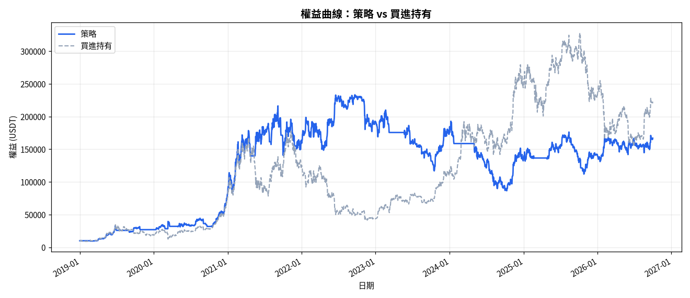
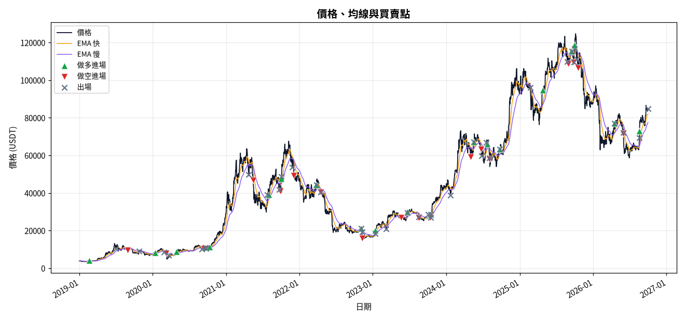
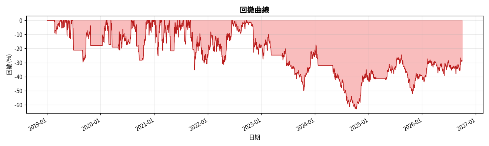
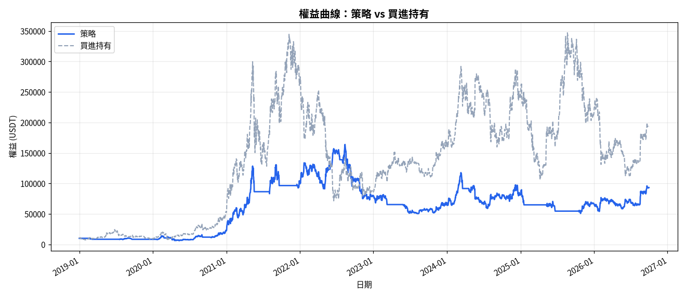
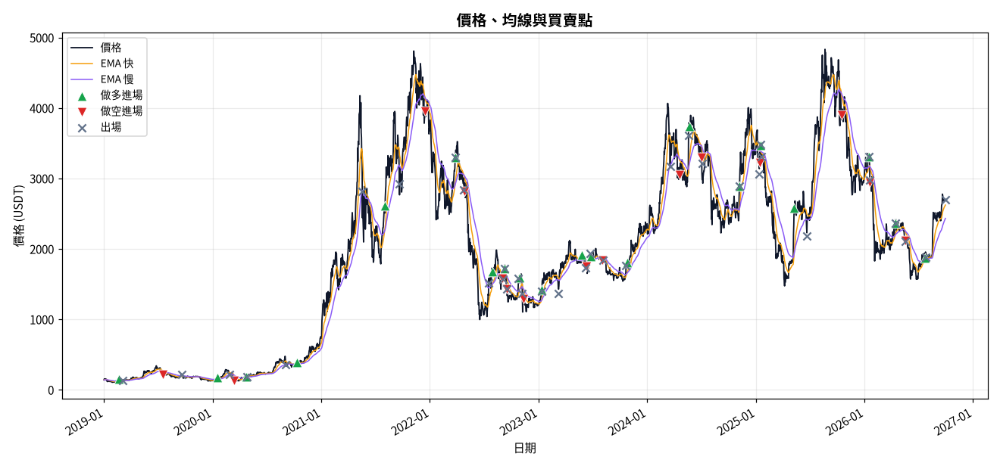
| EMA 快 | EMA 慢 | ATR 倍數 | Sharpe |
|---|---|---|---|
| 9 | 34 | 1.5 | 1.163 |
| 9 | 34 | 2.0 | 1.161 |
| 9 | 34 | 3.0 | 1.153 |
| 13 | 55 | 2.5 | 1.152 |
| 9 | 34 | 4.0 | 1.141 |
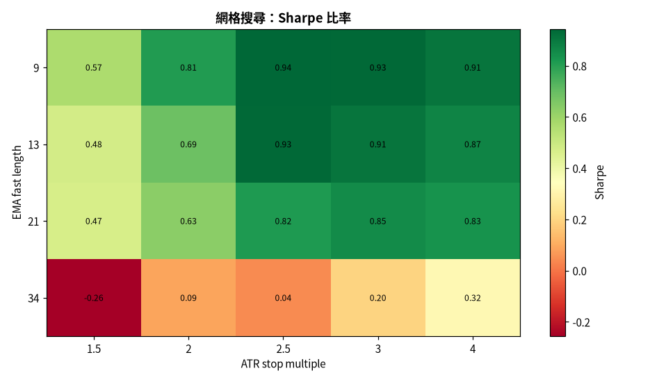
| 區段 | 總報酬 | 年化 | MDD | Sharpe | 交易 | 勝率 |
|---|---|---|---|---|---|---|
| 樣本內（前 70%） | +1298.97% | 62.69% | −49.93% | 1.18 | 26 | 53.8% |
| 樣本外（後 30%） | +55.77% | 21.01% | −36.49% | 0.72 | 12 | 41.7% |
verify_strategy.py 實際執行結果：18/18 全部通過。
| # | 檢查項目 | 結果 | 實測數據 |
|---|---|---|---|
| 1 | 無未來函數（截斷 250/300/350 根後前段訊號一致） | PASS | 3/3 一致 |
| 2 | 每筆進場對應正確方向的翻轉訊號 | PASS | 3 筆交易全數正確 |
| 3 | RSI ∈ [0, 100] | PASS | min 13.71 / max 81.92 |
| 4 | ATR > 0 | PASS | min 1.0582 |
| 5 | Supertrend 方向 ∈ {−1, 1} | PASS | {−1, 1} |
| 6 | 多單初始停損 < 進場價、空單 > 進場價 | PASS | 全數正確 |
| 7 | 移動停損只朝有利方向移動 | PASS | 多單上移、空單下移 |
| 8 | 交易成本確實計入 | PASS | 零成本 13,674 vs 有成本 13,473 |
| 9 | fraction 名目部位 > risk 名目部位 | PASS | 9,312 vs 1,410 |
| 10 | 盤整後上升產生多單且獲利 | PASS | 1 筆多單，10,000 → 29,166 |
| 11 | 純線性上升（無交叉）確實不進場 | PASS | 0 筆交易（符合預期） |
| 12 | 真實資料可完成回測 | PASS | 2,100 根，31 筆交易 |
| 13 | 真實資料權益曲線無 NaN | PASS | — |
| 14 | 真實資料期末權益為有限值 | PASS | 12,478.88 |
initial_stop，
並新增「移動停損只朝有利方向移動」的獨立斷言。完整檔案：crypto_trend_momentum_atr.pine （Pine v5，可直接貼進 TradingView 編譯）。
var 宣告皆在全域作用域，無區域宣告ta.supertrend 以 [line, dir] 正確解構 tuplehline()，動態線用 plot()alertcondition() 皆在全域作用域float 運算、str.tostring 格式化）//@version=5
strategy("Crypto Trend Momentum ATR (CTMA)", shorttitle="CTMA",
overlay=true, initial_capital=10000, default_qty_type=strategy.percent_of_equity,
default_qty_value=100, commission_type=strategy.commission.percent, commission_value=0.04,
slippage=5, pyramiding=0, calc_on_every_tick=false, process_orders_on_close=false)
// ---- 1) 輸入參數 ----
grpT = "① 趨勢 Trend"
emaFastLen = input.int(21, "EMA 快線", minval=2, group=grpT)
emaSlowLen = input.int(55, "EMA 慢線", minval=3, group=grpT)
useSupertrend = input.bool(false, "改用 Supertrend 過濾趨勢", group=grpT)
stLen = input.int(10, "Supertrend ATR 週期", minval=1, group=grpT)
stMult = input.float(3.0, "Supertrend 倍數", minval=0.5, step=0.1, group=grpT)
grpM = "② 動能 Momentum"
rsiLen = input.int(14, "RSI 週期", minval=2, group=grpM)
rsiLongMin = input.float(50.0, "做多 RSI 下限", minval=0, maxval=100, group=grpM)
rsiShortMax = input.float(50.0, "做空 RSI 上限", minval=0, maxval=100, group=grpM)
macdFast = input.int(12, "MACD 快線", minval=1, group=grpM)
macdSlow = input.int(26, "MACD 慢線", minval=2, group=grpM)
macdSig = input.int(9, "MACD 訊號線", minval=1, group=grpM)
grpV = "③ 波動度 / 風控 Volatility & Risk"
atrLen = input.int(14, "ATR 週期", minval=1, group=grpV)
atrStopMult = input.float(3.0, "ATR 停損倍數", minval=0.5, step=0.1, group=grpV)
useTrailing = input.bool(true, "啟用 ATR 移動停損", group=grpV)
atrTrailMult = input.float(5.0, "ATR 移動停損倍數", minval=0.5, step=0.1, group=grpV)
useTakeProfit = input.bool(false, "啟用 ATR 停利", group=grpV)
atrTpMult = input.float(6.0, "ATR 停利倍數", minval=0.5, step=0.1, group=grpV)
minAtrPct = input.float(0.5, "最低 ATR%（波動度門檻）", minval=0.0, step=0.1, group=grpV)
grpP = "④ 部位與方向 Position"
allowShort = input.bool(true, "允許做空", group=grpP)
riskPct = input.float(1.0, "每筆風險 %（僅供面板顯示）", minval=0.1, step=0.1, group=grpP)
grpD = "⑤ 顯示 Display"
showPanel = input.bool(true, "顯示資訊面板", group=grpD)
showStops = input.bool(true, "顯示停損線", group=grpD)
showMarkers = input.bool(true, "顯示買賣點標記", group=grpD)
// ---- 2) 指標計算 ----
emaFast = ta.ema(close, emaFastLen)
emaSlow = ta.ema(close, emaSlowLen)
rsiVal = ta.rsi(close, rsiLen)
[macdLine, signalLine, macdHist] = ta.macd(close, macdFast, macdSlow, macdSig)
atrVal = ta.atr(atrLen)
atrPct = atrVal / close * 100.0
[stLine, stDir] = ta.supertrend(stMult, stLen)
stLong = stDir == -1
stShort = stDir == 1
// ---- 3) 訊號條件 ----
crossUp = ta.crossover(emaFast, emaSlow)
crossDn = ta.crossunder(emaFast, emaSlow)
trendUpOk = useSupertrend ? stLong : true
trendDnOk = useSupertrend ? stShort : true
volOk = atrPct >= minAtrPct
warmOk = not na(emaSlow) and not na(atrVal) and not na(rsiVal)
longCond = crossUp and trendUpOk and rsiVal > rsiLongMin and macdHist > 0 and volOk and warmOk
shortCond = crossDn and trendDnOk and rsiVal < rsiShortMax and macdHist < 0 and volOk and warmOk and allowShort
longExitCond = crossDn
shortExitCond = crossUp
// ---- 4) 進出場執行（var 一律在全域宣告）----
var float longStop = na
var float shortStop = na
var float longTarget = na
var float shortTarget = na
if longCond
longStop := close - atrStopMult * atrVal
longTarget := useTakeProfit ? close + atrTpMult * atrVal : na
strategy.entry("LONG", strategy.long)
if shortCond
shortStop := close + atrStopMult * atrVal
shortTarget := useTakeProfit ? close - atrTpMult * atrVal : na
strategy.entry("SHORT", strategy.short)
if strategy.position_size > 0 and useTrailing and not na(atrVal)
longStop := math.max(nz(longStop, close - atrStopMult * atrVal), close - atrTrailMult * atrVal)
if strategy.position_size < 0 and useTrailing and not na(atrVal)
shortStop := math.min(nz(shortStop, close + atrStopMult * atrVal), close + atrTrailMult * atrVal)
if strategy.position_size > 0
strategy.exit("EXIT-L", from_entry="LONG", stop=longStop, limit=longTarget)
if strategy.position_size < 0
strategy.exit("EXIT-S", from_entry="SHORT", stop=shortStop, limit=shortTarget)
if longExitCond and strategy.position_size > 0
strategy.close("LONG", comment="SIGNAL_EXIT")
if shortExitCond and strategy.position_size < 0
strategy.close("SHORT", comment="SIGNAL_EXIT")
// ---- 5) 繪圖 ----
plot(emaFast, "EMA 快", color=color.new(color.orange, 0), linewidth=2)
plot(emaSlow, "EMA 慢", color=color.new(color.purple, 0), linewidth=2)
plot(useSupertrend ? stLine : na, "Supertrend", color=color.new(color.teal, 0), linewidth=1)
plot(showStops and strategy.position_size > 0 ? longStop : na, "多單停損",
color=color.new(color.red, 0), style=plot.style_linebr, linewidth=1)
plot(showStops and strategy.position_size < 0 ? shortStop : na, "空單停損",
color=color.new(color.red, 0), style=plot.style_linebr, linewidth=1)
plotshape(showMarkers and longCond, "做多進場", shape.triangleup, location.belowbar,
color=color.new(color.green, 0), size=size.small, text="LONG")
plotshape(showMarkers and shortCond, "做空進場", shape.triangledown, location.abovebar,
color=color.new(color.red, 0), size=size.small, text="SHORT")
hline(0, "零軸", color=color.new(color.gray, 60), linestyle=hline.style_dotted)
// ---- 6) 警報 ----
alertcondition(longCond, "CTMA 做多進場", "CTMA LONG entry on {{ticker}} @ {{close}}")
alertcondition(shortCond, "CTMA 做空進場", "CTMA SHORT entry on {{ticker}} @ {{close}}")
alertcondition(longExitCond and strategy.position_size > 0, "CTMA 多單出場", "CTMA LONG exit on {{ticker}}")
alertcondition(shortExitCond and strategy.position_size < 0, "CTMA 空單出場", "CTMA SHORT exit on {{ticker}}")
if longCond
alert("CTMA LONG " + syminfo.ticker + " @ " + str.tostring(close, format.mintick), alert.freq_once_per_bar_close)
if shortCond
alert("CTMA SHORT " + syminfo.ticker + " @ " + str.tostring(close, format.mintick), alert.freq_once_per_bar_close)
// ---- 7) 資訊面板 ----
var table panel = table.new(position.top_right, 2, 8, border_width=1)
if showPanel and barstate.islast
trendTxt = useSupertrend ? (stLong ? "多頭 ▲" : stShort ? "空頭 ▼" : "中性") : (emaFast > emaSlow ? "多頭 ▲" : "空頭 ▼")
posTxt = strategy.position_size > 0 ? "多單" : strategy.position_size < 0 ? "空單" : "空手"
table.cell(panel, 0, 0, "CTMA 狀態", bgcolor=color.new(color.blue, 70), text_color=color.white)
table.cell(panel, 1, 0, syminfo.ticker, bgcolor=color.new(color.blue, 70), text_color=color.white)
table.cell(panel, 0, 1, "趨勢")
table.cell(panel, 1, 1, trendTxt, text_color=emaFast > emaSlow ? color.green : color.red)
table.cell(panel, 0, 2, "RSI")
table.cell(panel, 1, 2, str.tostring(rsiVal, "#.0"), text_color=rsiVal > 50 ? color.green : color.red)
table.cell(panel, 0, 3, "MACD 柱")
table.cell(panel, 1, 3, str.tostring(macdHist, "#.####"), text_color=macdHist > 0 ? color.green : color.red)
table.cell(panel, 0, 4, "ATR%")
table.cell(panel, 1, 4, str.tostring(atrPct, "#.00") + "%", text_color=volOk ? color.green : color.gray)
table.cell(panel, 0, 5, "持倉")
table.cell(panel, 1, 5, posTxt)
table.cell(panel, 0, 6, "停損")
table.cell(panel, 1, 6, strategy.position_size > 0 ? str.tostring(longStop, format.mintick) : strategy.position_size < 0 ? str.tostring(shortStop, format.mintick) : "-")
table.cell(panel, 0, 7, "風險/筆")
table.cell(panel, 1, 7, str.tostring(riskPct, "#.0") + "%")crypto-quant/
├── run_signals.py 主程式（訊號產生 + 回測 + 圖表）
├── verify_strategy.py 驗證腳本（18 項檢查）
├── requirements.txt pandas / numpy / matplotlib
├── README.md 完整使用說明
├── pine/
│ └── crypto_trend_momentum_atr.pine
├── crypto_quant/
│ ├── data_fetch.py 多來源資料抓取（4 個備援）
│ ├── indicators.py EMA / RSI / MACD / ATR / Supertrend
│ ├── strategy.py 訊號產生（三層語意）
│ ├── backtest.py 事件驅動回測引擎
│ ├── metrics.py 績效指標
│ ├── plots.py matplotlib 繪圖（中文字型處理）
│ └── optimize.py 網格搜尋 + 樣本內外切分
└── output/ 回測輸出（CSV / JSON / PNG）pip install -r requirements.txt
# 基本回測
python3 run_signals.py --symbol BTCUSDT --start 2019-01-01
# 網格搜尋 + 樣本內外切分
python3 run_signals.py --symbol BTCUSDT --optimize
# 驗證
python3 verify_strategy.pydate,close,signal,atr,atr_pct,stop_price,rsi,macd_hist,position_hint
2019-02-20,3969.74,BULL_CROSS_ENTRY,111.7296,2.815,3634.5512,75.25,47.414,風險 1.0% / 停損距離 3.0×ATR
2019-08-30,9584.54,BEAR_CROSS_ENTRY,551.0774,5.75,11237.7721,39.38,-103.0844,風險 1.0% / 停損距離 3.0×ATR
2020-01-13,8110.34,BULL_CROSS_ENTRY,307.1706,3.787,7188.8281,60.87,85.0692,風險 1.0% / 停損距離 3.0×ATRside,entry_date,entry_price,qty,notional,stop_price,initial_stop,exit_date,exit_price,exit_reason,pnl,pnl_pct,bars_held
LONG,2019-02-21,3971.7249,2.51779776,10000.0,10346.4161,3636.5361,2019-07-01,10341.2429,ATR_STOP,16026.74,1.6027,130
SHORT,2019-08-31,9577.9686,2.70336481,25892.74,9123.9555,11231.2007,2019-10-26,9128.5175,ATR_STOP,1205.16,0.0465,56| 來源 | 狀態 | 說明 |
|---|---|---|
data-api.binance.vision | 使用中 | 完整 OHLCV，無地區限制，2,831 根日線 |
api.binance.com | 失敗 | 地區限制：Service unavailable from a restricted location |
api.binance.us | 可用 | 備援，成交量較小 |
api.kraken.com | 可用 | 備援，OHLC 格式需轉換 |
api.coingecko.com | 受限 | 免費層僅提供 365 天 OHLC，且無成交量 |
| Yahoo Finance | 失敗 | HTTP 429（沙盒環境被限流） |
單次切分只有一個樣本外區段，而且切點是人為選的 —— 換個切點結論就可能不同。 更關鍵的是，它無法回答「這組參數在未來還有效嗎？」，因為它只被檢驗過一次。
Walk-forward 把時間軸切成連續的 (訓練窗 → 測試窗) 配對，每個窗口只用該窗口訓練窗的資料做網格搜尋， 選出最佳參數後只用那一組參數在緊接的測試窗上回測。所有測試窗串接起來， 就是一條完全由樣本外資料構成的權益曲線 —— 這是唯一可信的績效來源。
|---- train 1 ----|-- test 1 --|
|---- train 2 ----|-- test 2 --|
|---- train 3 ----|-- test 3 --|
| 項目 | 設定 | 說明 |
|---|---|---|
| 訓練窗 | 730 根 | 約 2 年日線 |
| 測試窗 | 180 根 | 約 6 個月，無縫相接 |
| 模式 | rolling | 滾動窗（訓練窗長度固定、向前滑動） |
| 選參目標 | Sharpe | 訓練窗內以 Sharpe 最高者為最佳 |
| 網格 | 55 組 | EMA 快 {9,13,21,34} × 慢 {34,55,89} × ATR 停損 {1.5,2,2.5,3,4}（已排除快≥慢） |
| 最少交易 | 3 筆 | 訓練窗不足則不納入評選 |
| 暖機 | 60 根 | 測試窗往前接訓練窗尾端暖機，暖機期禁止進場 |
| 窗口數 | 11 | BTC 與 ETH 各 11 個 |
資料來源：Binance 公開資料端點 data-api.binance.vision，2019-01-01 ~ 2026-10-01（2,831 根日線）。
Walk-forward 樣本外期間為 2020-12-31 ~ 2026-06-02。買進持有取同一段樣本外期間以公平比較。
| 指標 | Walk-forward OOS | 單次切分 OOS | 買進持有（同期） |
|---|---|---|---|
| 總報酬率 | +94.55% | +55.99% | +193.18% |
| 年化報酬率 | 13.07% | 21.08% | 20.57% |
| 最大回撤 | −37.38% | −36.49% | −76.63% |
| Sharpe | 0.52 | 0.72 | 0.61 |
| Sortino | 0.54 | 1.03 | 0.88 |
| 交易次數 | 39 | 12 | 1 |
| 勝率 | 33.3% | 41.7% | — |
| 指標 | Walk-forward OOS | 單次切分 OOS | 買進持有（同期） |
|---|---|---|---|
| 總報酬率 | +15.59% | +31.83% | +266.87% |
| 年化報酬率 | 2.71% | 12.62% | 25.37% |
| 最大回撤 | −53.25% | −47.91% | −79.30% |
| Sharpe | 0.29 | 0.50 | 0.68 |
| Sortino | 0.28 | 0.59 | 0.98 |
| 交易次數 | 34 | 10 | 1 |
| 勝率 | 41.2% | 50.0% | — |
這是本次改造最關鍵、也最容易被忽略的發現 —— 我沒有把它包裝成正面的結果：
為什麼會這樣？ 單次切分只挑了一個「運氣好」的樣本外區段；Walk-forward 檢驗了 11 個連續區段， 把參數選擇流程的真實表現完整暴露出來。當每個窗口都必須重新選參，而參數又在不同窗口間跳動時， 績效自然被稀釋。這才是真相 —— 單次切分的高 Sharpe 有相當程度是切點運氣。
| 標的 | 訓練窗平均 Sharpe | 測試窗平均 Sharpe | 變化 |
|---|---|---|---|
| BTCUSDT | 1.414 | 0.539 | −61.9% |
| ETHUSDT | 1.156 | 0.413 | −64.3% |
訓練窗的「最佳」參數到了測試窗平均衰退 六成以上。這是過度擬合的直接量化證據： 在訓練窗上挑到的高分，有相當比例來自對雜訊的擬合，而非真實的預測力。
統計每個參數在各窗口選出值的眾數占比與唯一值個數。占比越高代表越穩定。
| 標的 | 參數 | 眾數 | 眾數占比 | 唯一值數 | 範圍 |
|---|---|---|---|---|---|
| BTCUSDT 整體 61.4% | EMA fast | 13 | 45.5% | 4 | [9, 34] |
| EMA slow | 55 | 45.5% | 3 | [34, 89] | |
| ATR 停損倍數 | 1.5 | 54.5% | 4 | [1.5, 3.0] | |
| ATR 移動停損倍數 | 5.0 | 100.0% | 1 | [5.0, 5.0] | |
| ETHUSDT 整體 68.2% | EMA fast | 13 | 45.5% | 4 | [9, 34] |
| EMA slow | 89 | 54.5% | 3 | [34, 89] | |
| ATR 停損倍數 | 1.5 | 72.7% | 3 | [1.5, 2.5] | |
| ATR 移動停損倍數 | 5.0 | 100.0% | 1 | [5.0, 5.0] |
解讀：ATR 移動停損倍數 100% 穩定（因為網格中只有一個值，不具資訊量）。 EMA 快線與慢線的眾數占比僅約 45%，代表超過一半的窗口選出不同參數 —— 這是中度不穩定的訊號。ATR 停損倍數相對穩定（54.5% / 72.7%），且明顯偏好較緊的 1.5 倍。
| # | 訓練窗 | 測試窗 | EMA 快 | EMA 慢 | ATR 停損 | 訓練 Sharpe | 測試報酬 | 測試 Sharpe | 交易 |
|---|---|---|---|---|---|---|---|---|---|
| 0 | 2019-01-01 ~ 2020-12-30 | 2020-12-31 ~ 2021-06-28 | 13 | 55 | 2.5 | 2.34 | +1.02% | 0.27 | 3 |
| 1 | 2019-06-30 ~ 2021-06-28 | 2021-06-29 ~ 2021-12-25 | 13 | 55 | 1.5 | 1.86 | −15.45% | −0.67 | 4 |
| 2 | 2019-12-27 ~ 2021-12-25 | 2021-12-26 ~ 2022-06-23 | 13 | 55 | 3.0 | 1.90 | +37.77% | 2.03 | 2 |
| 3 | 2020-06-24 ~ 2022-06-23 | 2022-06-24 ~ 2022-12-20 | 13 | 55 | 3.0 | 2.08 | −26.33% | −1.20 | 4 |
| 4 | 2020-12-21 ~ 2022-12-20 | 2022-12-21 ~ 2023-06-18 | 13 | 89 | 2.0 | 0.82 | +1.61% | 0.25 | 2 |
| 5 | 2021-06-19 ~ 2023-06-18 | 2023-06-19 ~ 2023-12-15 | 34 | 55 | 2.0 | 0.77 | +27.60% | 1.70 | 3 |
| 6 | 2021-12-16 ~ 2023-12-15 | 2023-12-16 ~ 2024-06-12 | 21 | 89 | 1.5 | 1.00 | 0.00% | 0.00 | 0 |
| 7 | 2022-06-14 ~ 2024-06-12 | 2024-06-13 ~ 2024-12-09 | 9 | 34 | 1.5 | 1.01 | +26.42% | 1.30 | 5 |
| 8 | 2022-12-11 ~ 2024-12-09 | 2024-12-10 ~ 2025-06-07 | 9 | 34 | 1.5 | 1.54 | +12.99% | 0.84 | 5 |
| 9 | 2023-06-09 ~ 2025-06-07 | 2025-06-08 ~ 2025-12-04 | 9 | 34 | 1.5 | 1.43 | −2.90% | −0.13 | 6 |
| 10 | 2023-12-06 ~ 2025-12-04 | 2025-12-05 ~ 2026-06-02 | 9 | 34 | 1.5 | 0.81 | +24.80% | 1.55 | 5 |
| # | 訓練窗 | 測試窗 | EMA 快 | EMA 慢 | ATR 停損 | 訓練 Sharpe | 測試報酬 | 測試 Sharpe | 交易 |
|---|---|---|---|---|---|---|---|---|---|
| 0 | 2019-01-01 ~ 2020-12-30 | 2020-12-31 ~ 2021-06-28 | 9 | 34 | 1.5 | 1.91 | −25.03% | −0.42 | 4 |
| 1 | 2019-06-30 ~ 2021-06-28 | 2021-06-29 ~ 2021-12-25 | 13 | 34 | 2.5 | 2.06 | −8.83% | 0.15 | 4 |
| 2 | 2019-12-27 ~ 2021-12-25 | 2021-12-26 ~ 2022-06-23 | 21 | 55 | 1.5 | 1.93 | +47.23% | 2.27 | 2 |
| 3 | 2020-06-24 ~ 2022-06-23 | 2022-06-24 ~ 2022-12-20 | 21 | 55 | 1.5 | 2.26 | −37.77% | −1.45 | 6 |
| 4 | 2020-12-21 ~ 2022-12-20 | 2022-12-21 ~ 2023-06-18 | 13 | 34 | 2.0 | 0.41 | +1.68% | 0.31 | 6 |
| 5 | 2021-06-19 ~ 2023-06-18 | 2023-06-19 ~ 2023-12-15 | 34 | 89 | 1.5 | 0.75 | +19.76% | 1.19 | 3 |
| 6 | 2021-12-16 ~ 2023-12-15 | 2023-12-16 ~ 2024-06-12 | 34 | 89 | 1.5 | 0.89 | −3.18% | −0.46 | 1 |
| 7 | 2022-06-14 ~ 2024-06-12 | 2024-06-13 ~ 2024-12-09 | 13 | 89 | 1.5 | 0.26 | +20.76% | 1.04 | 4 |
| 8 | 2022-12-11 ~ 2024-12-09 | 2024-12-10 ~ 2025-06-07 | 9 | 89 | 1.5 | 0.84 | +21.97% | 1.23 | 2 |
| 9 | 2023-06-09 ~ 2025-06-07 | 2025-06-08 ~ 2025-12-04 | 13 | 89 | 1.5 | 0.97 | −9.85% | −2.20 | 1 |
| 10 | 2023-12-06 ~ 2025-12-04 | 2025-12-05 ~ 2026-06-02 | 13 | 89 | 2.5 | 0.44 | +17.88% | 2.88 | 1 |
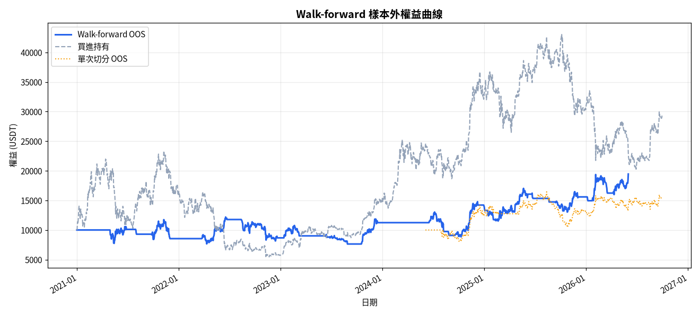
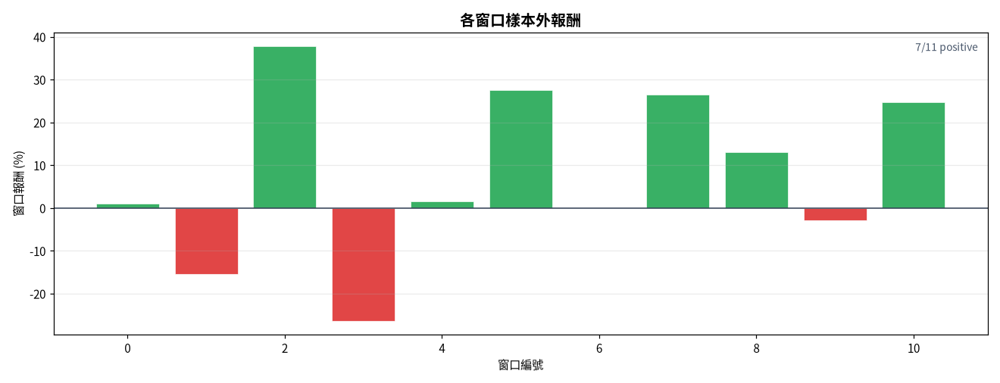
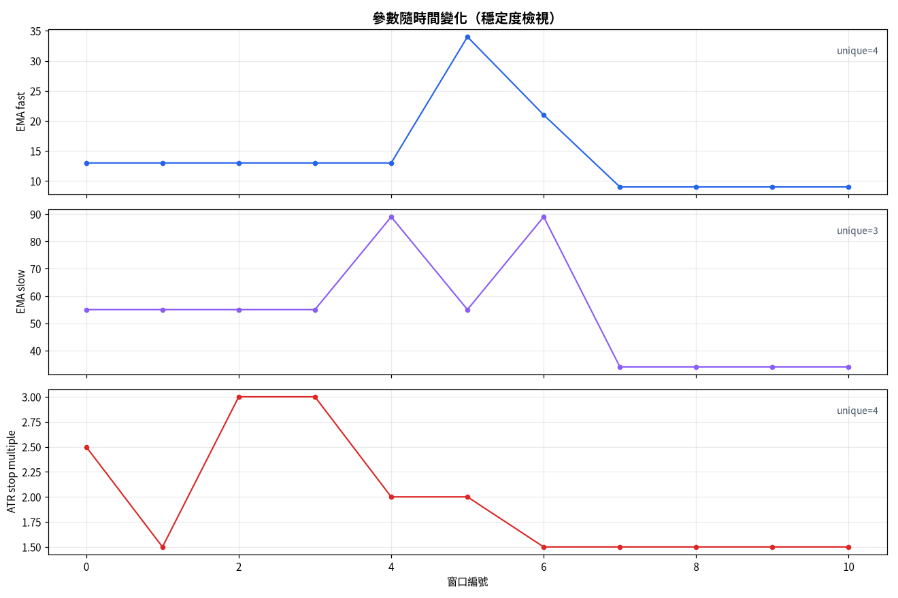
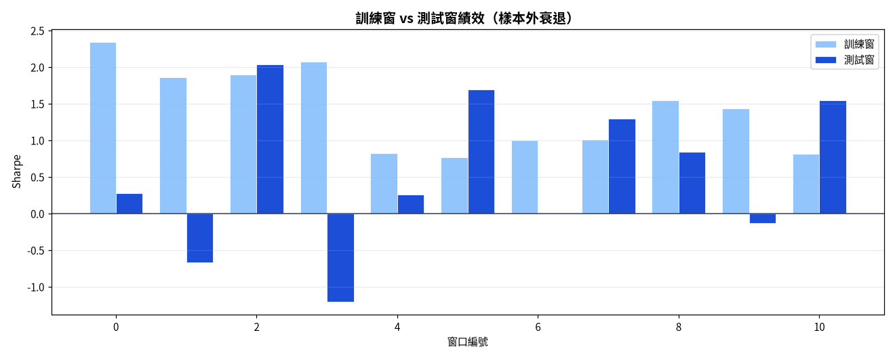
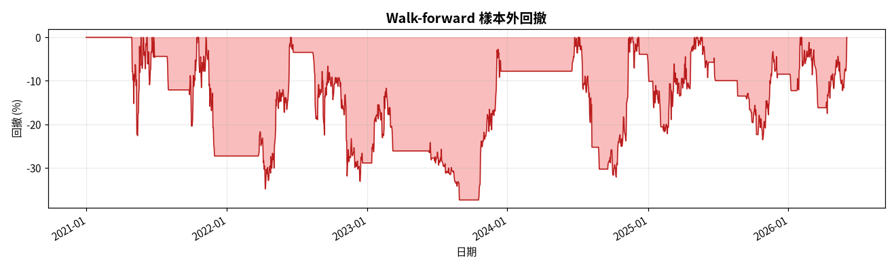
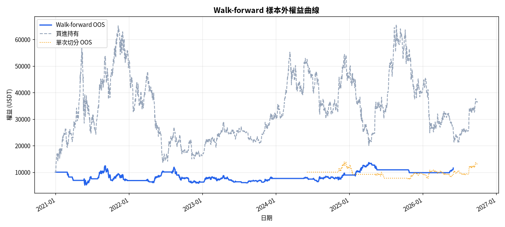
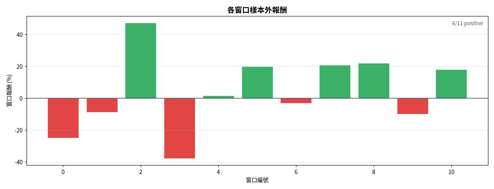
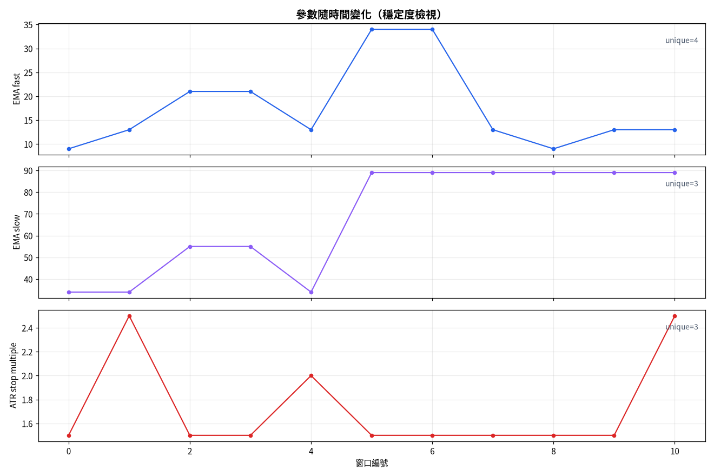
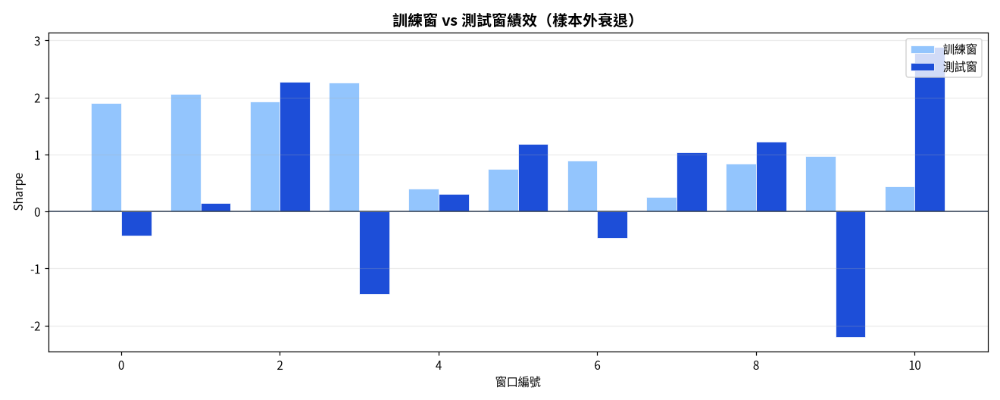
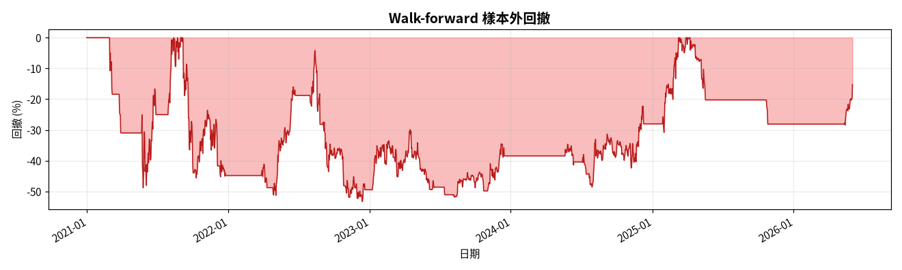
verify_walkforward.py 以 19 項檢查驗證切窗正確性，全部通過：
| 檢查 | 方法 | 結果 |
|---|---|---|
| 訓練／測試窗不重疊 | 逐窗口比對索引，斷言 train_end < test_start | PASS 20 個窗口 |
| 測試窗無縫相接 | 相鄰測試窗不重疊且依序前進 | PASS |
| 無未來函數（截斷一致性） | 把資料截斷到某窗口測試窗結束後重跑，該窗口選出的參數與樣本外權益必須與全量執行完全一致 | PASS 最大差異 0.000e+00 |
| 參數只由訓練窗決定 | 把測試窗價格全部乘 3，重新執行 —— 選出參數必須不變 | PASS |
| 暖機期不進場 | 窗口邊界權益必須連續（暖機期零交易） | PASS 相對落差 0.000e+00 |
| 樣本外權益連續 | 全為正、索引嚴格遞增、長度等於所有測試窗之和 | PASS 2400 = 2400 |
| 彙總指標可重現 | 由串接權益重算總報酬／MDD／Sharpe 與引擎回報值一致 | PASS |
| anchored 模式正確 | 訓練窗起點固定且長度遞增 | PASS 400 → 2680 根 |
「截斷一致性」是無未來函數最強的證明：若參數選擇過程偷看了未來資料， 把資料截斷後重跑，該窗口的參數就會改變。實測差異為 0.000e+00，逐點完全一致。
第 11 章把單次切分升級為 walk-forward，但只跑了 rolling（滾動窗）一種模式。 本章把它升級為完整的 walk-forward optimization（WFO）雙模式對照： 同一組測試窗切點、同一組參數網格、同一組成本模型，唯一差異是訓練窗的取法 —— 因此效能差異可完全歸因於「訓練資料的取用方式」。
| 模式 | 訓練窗取法 | 假設 | 優點 | 缺點 |
|---|---|---|---|---|
| rolling 滾動窗 | 長度固定（730 根），隨時間向前滑動 | 近期市場結構比遠期更有代表性 | 能適應市場結構改變；訓練樣本新 | 樣本數固定且較少；可能過度反應近期雜訊 |
| anchored 擴張窗 | 起點固定（2019-01-01），長度遞增（730 → 2530 根） | 越多歷史越好 | 訓練樣本最多，統計最穩定 | 含較舊的市場結構（如 2019 低波動期），可能拖累近期適應力 |
樣本外期間兩者完全相同：2020-12-31 ~ 2026-06-02，各 11 個窗口、2,400 根。
| 指標 | rolling | anchored | 較佳 |
|---|---|---|---|
| 樣本外總報酬 | +94.55% | +97.85% | anchored |
| 年化報酬 | 13.07% | 13.42% | anchored |
| 最大回撤 | −37.38% | −50.81% | rolling |
| Sharpe | 0.52 | 0.51 | rolling |
| Sortino | 0.54 | 0.60 | anchored |
| Calmar | 0.35 | 0.26 | rolling |
| 勝率 | 33.33% | 40.91% | anchored |
| 盈虧比 | 1.58 | 1.43 | rolling |
| 交易次數 | 39 | 44 | — |
| 平均持有（根） | 25.0 | 30.4 | — |
BTCUSDT 解讀：兩者總報酬幾乎相同（+94.55% vs +97.85%），但 rolling 的風險控制明顯較好 —— 最大回撤少 13.4 個百分點（−37.4% vs −50.8%），Calmar 高 34%。anchored 勝在勝率與 Sortino， 但代價是回撤深得多。以「風險調整後報酬」而言 rolling 略勝。
| 指標 | rolling | anchored | 較佳 |
|---|---|---|---|
| 樣本外總報酬 | +15.59% | −35.59% | rolling |
| 年化報酬 | 2.71% | −7.80% | rolling |
| 最大回撤 | −53.25% | −70.31% | rolling |
| Sharpe | 0.29 | 0.13 | rolling |
| Sortino | 0.28 | 0.14 | rolling |
| Calmar | 0.05 | −0.11 | rolling |
| 勝率 | 41.18% | 33.33% | rolling |
| 盈虧比 | 1.16 | 0.90 | rolling |
| 交易次數 | 34 | 54 | — |
| 平均持有（根） | 27.6 | 23.6 | — |
ETHUSDT 解讀：差距懸殊。anchored 在 ETH 上是虧損的（−35.59%）， 而 rolling 仍為正（+15.59%）。anchored 的訓練窗一路擴張到 2,530 根，把 2019–2020 的低波動結構 一路帶進 2024–2026 的決策，導致它在 ETH 的劇烈波動中反覆被停損（54 筆交易、盈虧比僅 0.90）。
| 標的 | 模式 | 總報酬 | 年化 | 最大回撤 | Sharpe | Sortino | Calmar | 交易 |
|---|---|---|---|---|---|---|---|---|
| BTCUSDT | rolling WF | +94.55% | 13.07% | −37.38% | 0.52 | 0.54 | 0.35 | 39 |
| anchored WF | +97.85% | 13.42% | −50.81% | 0.51 | 0.60 | 0.26 | 44 | |
| 單次切分 | +24.90% | 3.94% | −62.96% | 0.29 | 0.38 | 0.06 | 31 | |
| 買進持有 | +193.01% | 20.56% | −76.63% | 0.61 | 0.88 | 0.27 | 0 | |
| ETHUSDT | rolling WF | +15.59% | 2.71% | −53.25% | 0.29 | 0.28 | 0.05 | 34 |
| anchored WF | −35.59% | −7.80% | −70.31% | 0.13 | 0.14 | −0.11 | 54 | |
| 單次切分 | +7.76% | 1.31% | −69.19% | 0.26 | 0.30 | 0.02 | 29 | |
| 買進持有 | +266.72% | 25.36% | −79.30% | 0.68 | 0.98 | 0.32 | 0 |
誠實結論：四種配置中，買進持有的總報酬與 Sharpe 都是最高的。 WFO 的價值不在「打敗買進持有」，而在把最大回撤砍掉 40–50%（BTC：−37% vs −77%）。 這是一個「用報酬換取回撤控制」的策略，不是「報酬最大化」的策略。
rolling：訓練窗固定 730 根，起點逐窗前進。
| # | 訓練窗 | 測試窗 | EMA 快 | EMA 慢 | ATR 停損 | 訓練 Sharpe | 測試報酬 | 測試 Sharpe |
|---|---|---|---|---|---|---|---|---|
| 0 | 2019-01-01 ~ 2020-12-30 | 2020-12-31 ~ 2021-06-28 | 13 | 55 | 2.5 | 2.34 | +1.02% | 0.27 |
| 1 | 2019-06-30 ~ 2021-06-28 | 2021-06-29 ~ 2021-12-25 | 13 | 55 | 1.5 | 1.86 | −15.45% | −0.67 |
| 2 | 2019-12-27 ~ 2021-12-25 | 2021-12-26 ~ 2022-06-23 | 13 | 55 | 3.0 | 1.90 | +37.77% | 2.03 |
| 3 | 2020-06-24 ~ 2022-06-23 | 2022-06-24 ~ 2022-12-20 | 13 | 55 | 3.0 | 2.08 | −26.33% | −1.20 |
| 4 | 2020-12-21 ~ 2022-12-20 | 2022-12-21 ~ 2023-06-18 | 13 | 89 | 2.0 | 0.82 | +1.61% | 0.25 |
| 5 | 2021-06-19 ~ 2023-06-18 | 2023-06-19 ~ 2023-12-15 | 34 | 55 | 2.0 | 0.77 | +27.60% | 1.70 |
| 6 | 2021-12-16 ~ 2023-12-15 | 2023-12-16 ~ 2024-06-12 | 21 | 89 | 1.5 | 1.00 | 0.00% | 0.00 |
| 7 | 2022-06-14 ~ 2024-06-12 | 2024-06-13 ~ 2024-12-09 | 9 | 34 | 1.5 | 1.01 | +26.42% | 1.30 |
| 8 | 2022-12-11 ~ 2024-12-09 | 2024-12-10 ~ 2025-06-07 | 9 | 34 | 1.5 | 1.54 | +12.99% | 0.84 |
| 9 | 2023-06-09 ~ 2025-06-07 | 2025-06-08 ~ 2025-12-04 | 9 | 34 | 1.5 | 1.43 | −2.90% | −0.13 |
| 10 | 2023-12-06 ~ 2025-12-04 | 2025-12-05 ~ 2026-06-02 | 9 | 34 | 1.5 | 0.81 | +24.80% | 1.55 |
anchored：訓練窗起點固定 2019-01-01，長度由 730 遞增至 2,530 根。
| # | 訓練窗長度 | 測試窗 | EMA 快 | EMA 慢 | ATR 停損 | 訓練 Sharpe | 測試報酬 | 測試 Sharpe |
|---|---|---|---|---|---|---|---|---|
| 0 | 730 | 2020-12-31 ~ 2021-06-28 | 13 | 55 | 2.5 | 2.34 | +1.02% | 0.27 |
| 1 | 910 | 2021-06-29 ~ 2021-12-25 | 13 | 55 | 2.5 | 2.36 | −1.25% | 0.25 |
| 2 | 1090 | 2021-12-26 ~ 2022-06-23 | 13 | 55 | 3.0 | 2.00 | +37.77% | 2.03 |
| 3 | 1270 | 2022-06-24 ~ 2022-12-20 | 13 | 55 | 3.0 | 2.02 | −26.33% | −1.20 |
| 4 | 1450 | 2022-12-21 ~ 2023-06-18 | 13 | 55 | 3.0 | 1.68 | −2.17% | 0.06 |
| 5 | 1630 | 2023-06-19 ~ 2023-12-15 | 13 | 55 | 2.5 | 1.53 | +36.22% | 1.95 |
| 6 | 1810 | 2023-12-16 ~ 2024-06-12 | 13 | 55 | 2.5 | 1.50 | +9.92% | 0.63 |
| 7 | 1990 | 2024-06-13 ~ 2024-12-09 | 9 | 34 | 4.0 | 1.37 | +10.91% | 0.69 |
| 8 | 2170 | 2024-12-10 ~ 2025-06-07 | 9 | 34 | 4.0 | 1.31 | +15.21% | 0.93 |
| 9 | 2350 | 2025-06-08 ~ 2025-12-04 | 9 | 34 | 4.0 | 1.27 | −13.21% | −0.87 |
| 10 | 2530 | 2025-12-05 ~ 2026-06-02 | 9 | 34 | 2.0 | 1.18 | +20.30% | 1.27 |
統計每個參數在各窗口選出值的眾數占比與唯一值個數。占比越高越穩定。
| 標的 | 模式 | 參數 | 眾數 | 眾數占比 | 唯一值 | 範圍 | 標準差 |
|---|---|---|---|---|---|---|---|
| BTCUSDT | rolling 整體 61.4% | EMA fast | 13 | 45.5% | 4 | [9, 34] | 7.09 |
| EMA slow | 55 | 45.5% | 3 | [34, 89] | 19.19 | ||
| ATR 停損 | 1.5 | 54.5% | 4 | [1.5, 3.0] | 0.58 | ||
| ATR 移動停損 | 5.0 | 100.0% | 1 | [5.0, 5.0] | 0.00 | ||
| anchored 整體 65.9% | EMA fast | 13 | 63.6% | 2 | [9, 13] | 1.92 | |
| EMA slow | 55 | 63.6% | 2 | [34, 55] | 10.10 | ||
| ATR 停損 | 2.5 | 36.4% | 4 | [2.0, 4.0] | 0.67 | ||
| ATR 移動停損 | 5.0 | 100.0% | 1 | [5.0, 5.0] | 0.00 | ||
| ETHUSDT | rolling 整體 68.2% | EMA fast | 13 | 45.5% | 4 | [9, 34] | 8.61 |
| EMA slow | 89 | 54.5% | 3 | [34, 89] | 24.22 | ||
| ATR 停損 | 1.5 | 72.7% | 3 | [1.5, 2.5] | 0.39 | ||
| ATR 移動停損 | 5.0 | 100.0% | 1 | [5.0, 5.0] | 0.00 | ||
| anchored 整體 88.6% | EMA fast | 13 | 90.9% | 2 | [9, 13] | 1.15 | |
| EMA slow | 34 | 100.0% | 1 | [34, 34] | 0.00 | ||
| ATR 停損 | 2.0 | 63.6% | 3 | [1.5, 2.5] | 0.29 | ||
| ATR 移動停損 | 5.0 | 100.0% | 1 | [5.0, 5.0] | 0.00 |
解讀：
| 標的 | 模式 | 訓練窗平均 Sharpe | 測試窗平均 Sharpe | 衰退幅度 |
|---|---|---|---|---|
| BTCUSDT | rolling | 1.414 | 0.539 | −61.9% |
| anchored | 1.688 | 0.547 | −67.6% | |
| ETHUSDT | rolling | 1.156 | 0.413 | −64.3% |
| anchored | 1.471 | 0.282 | −80.8% |
四種組合的衰退幅度都在 −62% ~ −81% 之間，全部落在「嚴重過度擬合」的區間。 anchored 的衰退更嚴重（BTC −67.6% vs −61.9%；ETH −80.8% vs −64.3%）—— 因為它的訓練窗更長、更容易在訓練期「記住」更多雜訊，而這些雜訊在測試期完全失效。
| 標的 | 勝出模式 | 票數 | 逐項比較 |
|---|---|---|---|
| BTCUSDT | rolling | 3 : 2 | Sharpe ✓、Calmar ✓、最大回撤 ✓；Sortino ✗、穩定度 ✗ |
| ETHUSDT | rolling | 4 : 1 | Sharpe ✓、Sortino ✓、Calmar ✓、最大回撤 ✓；穩定度 ✗ |
結論：在此資料上，rolling（滾動窗）較穩健。 兩檔標的都由 rolling 勝出（3:2 與 4:1）。
為什麼？ 加密貨幣的市場結構在 2019–2026 之間發生過數次劇變（2021 牛市、2022 熊市、 2023–2024 復甦、2025–2026 高波動）。anchored 把 2019–2020 的低波動結構一路帶進後期的決策， 訓練資料雖多，但其中相當比例已經「過期」。rolling 只取最近 730 根， 雖然樣本較少、參數跳動較大，卻能跟上結構變化 —— 這正是它在 ETH 上能維持正報酬、 而 anchored 卻虧損 35.59% 的原因。
但必須誠實補充：rolling 的優勢主要來自「風險控制」而非「報酬」。 兩者在 BTC 的總報酬幾乎相同；在 ETH 上 rolling 勝出，但 Sharpe 也僅 0.29，仍遠低於買進持有的 0.68。 沒有任何一種模式能讓這個策略打敗買進持有。
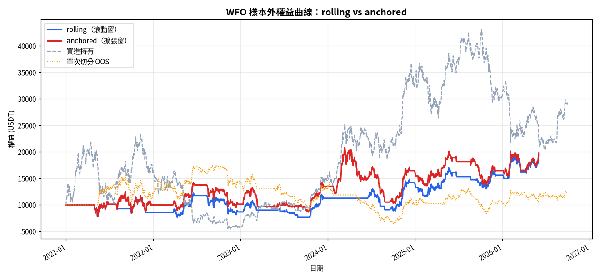
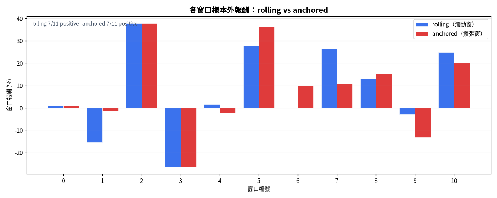
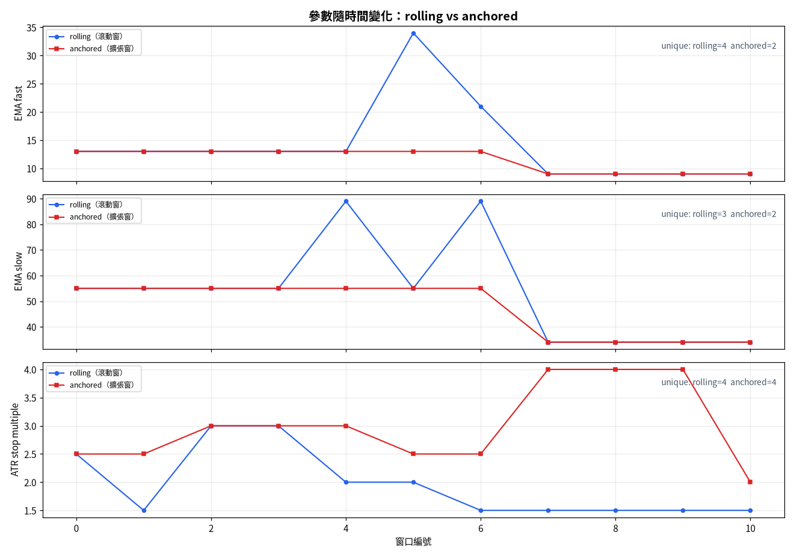
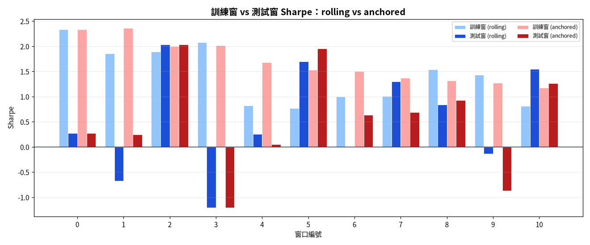
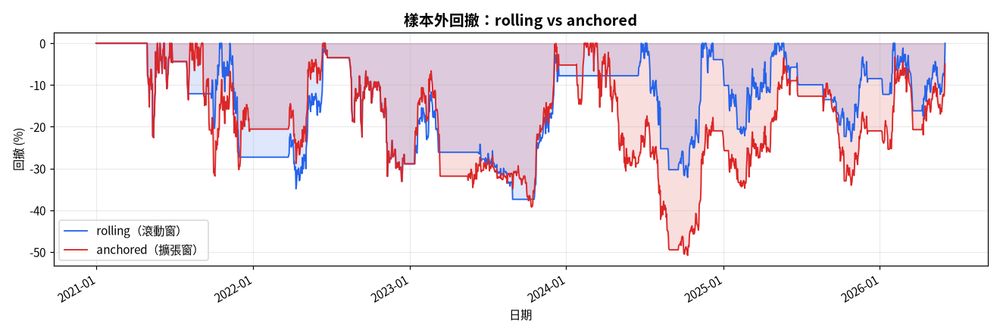
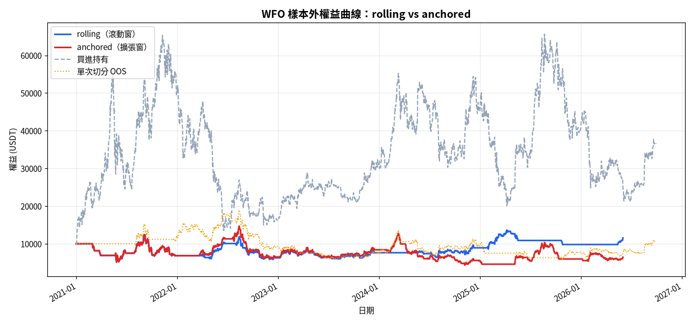
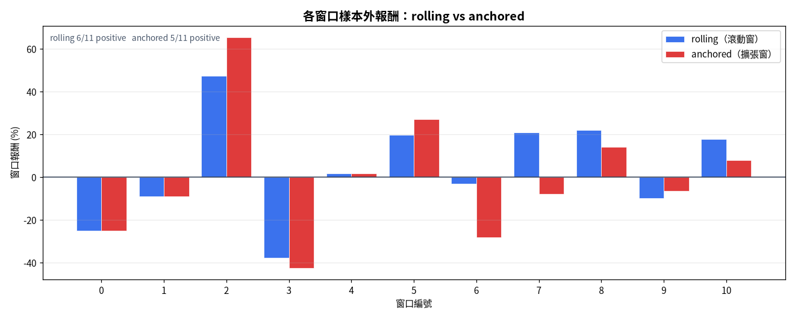
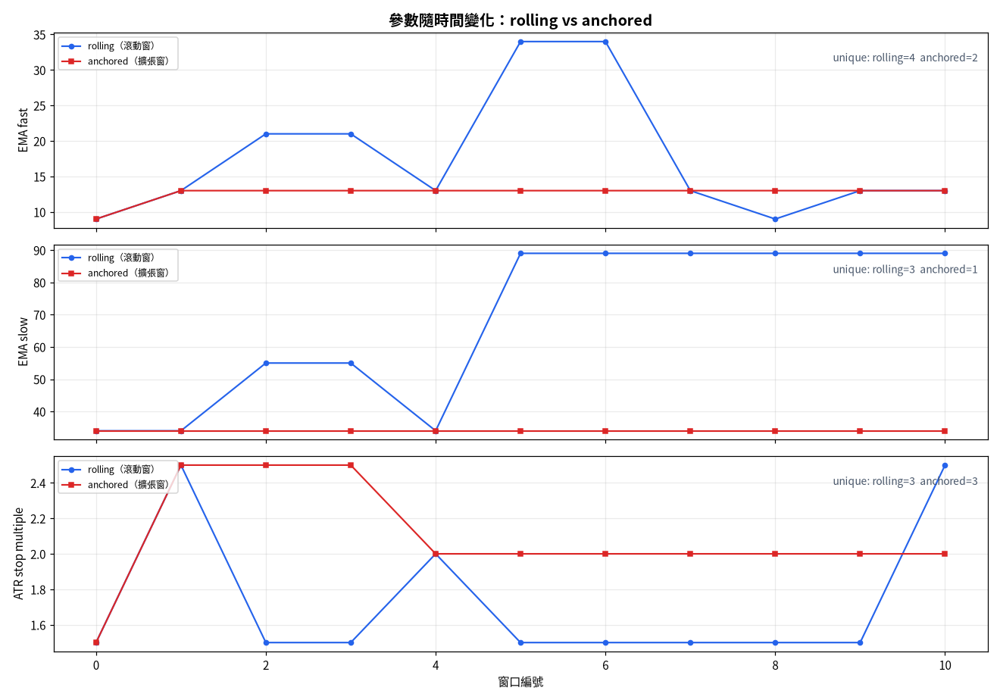
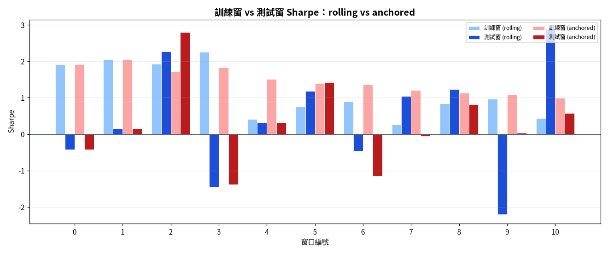
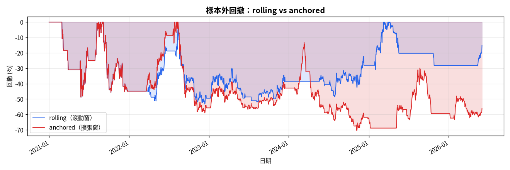
verify_wfo.py 以 36 項檢查驗證雙模式切窗正確性，全部通過：
| 檢查 | 方法 | 結果 |
|---|---|---|
| 訓練／測試窗不重疊 | 逐窗口比對索引，斷言 train_end < test_start | PASS 兩模式各 20 窗口 |
| 測試窗無縫相接 | 相鄰測試窗不重疊且依序前進 | PASS |
| 無未來函數（截斷一致性） | 截斷資料後重跑，該窗口參數與樣本外權益必須完全一致 | PASS 最大差異 0.000e+00 |
| 參數只由訓練窗決定 | 測試窗價格 ×3，選出參數必須不變 | PASS 兩模式皆通過 |
| 暖機期不進場 | 窗口邊界權益必須連續（暖機期零交易） | PASS 相對落差 0.000e+00 |
| 樣本外權益連續 | 全為正、索引嚴格遞增、長度等於所有測試窗之和 | PASS 2400 = 2400 |
| 彙總指標可重現 | 由串接權益重算總報酬／MDD／Sharpe 與引擎回報值一致 | PASS |
| rolling 訓練窗固定 | 所有窗口訓練窗長度相同 | PASS 長度集合 {400} |
| anchored 訓練窗遞增 | 起點固定且長度嚴格遞增 | PASS 400 → 2680 根 |
| 兩模式測試窗一致 | rolling 與 anchored 測試窗切點完全相同（否則不可比較） | PASS 20 個窗口 |
| 資料完整性 | 無 NaN、日期嚴格遞增、無重複、high ≥ low | PASS |
「截斷一致性」是無未來函數最強的證明：若參數選擇過程偷看了未來資料， 把資料截斷後重跑，該窗口的參數就會改變。實測差異為 0.000e+00，逐點完全一致。 「兩模式測試窗一致」則是本章對照有效性的前提 —— 已驗證兩者測試窗完全相同。
本章交付一套以 TradingView Pine Script v6 為主的量化指標腳本， 同時提供 指標版（indicator） 與 策略版（strategy） 兩份完整可貼上的檔案： 指標版用於看盤（畫買賣點、停損線、指標面板），策略版用於回測（交給 TradingView 的 Strategy Tester 撮合與統計）。 兩者共用同一套訊號邏輯，只是執行引擎不同。
| 面向 | 指標版 indicator | 策略版 strategy |
|---|---|---|
| 主要用途 | 看盤、人工下單、設定通知 | 回測、參數掃描、績效統計 |
| 持倉來源 | 腳本自行維護狀態機（var pos） | TradingView strategy.* 引擎撮合 |
| 能否用 Strategy Tester | 否 | 是（淨利／MDD／勝率／PF） |
| 繪圖限制 | 無限制，可畫多層停損／停利線 | 可畫，但過度繪圖會拖慢回測 |
| 成本模型 | 無（僅供看盤） | 可設 commission / slippage |
| 部位大小 | 面板顯示建議單位數 | 可選權益比例或 ATR 風險比例 |
為什麼不只用一份？指標版不能呼叫 strategy.*，
拿不到部位與績效；策略版若把全套繪圖與面板都塞進去，回測會明顯變慢，且
plotshape 過多會蓋掉 K 棒。實務上兩者分工最順：看盤用指標版、驗證用策略版。
| 加密貨幣特性 | 對應設計 | 理由 |
|---|---|---|
| 24/7 交易、無收盤跳空保護 | ATR 自適應停損取代固定 % | 固定 % 停損在高波動期會被瞬間掃出、低波動期又太寬 |
| 波動大、趨勢強 | 趨勢線用 EMA（非 SMA） | EMA 對近期價格更敏感，趨勢反轉時反應更快 |
| 假訊號多、來回洗盤 | 動能雙重確認：RSI 中軸同側 ＋ MACD 柱同向 | 單靠均線交叉在盤整區會產生大量假突破 |
| 盤整泥沼、低波動期 | ATR% 波動度門檻 | 低波動時不進場，避免被來回磨損 |
| 永續合約成熟、可雙向 | 做多／做空可分別開關 | 現貨只能做多；合約可做空，參數需可切換 |
【趨勢層 Trend】 EMA 快線 / 慢線 交叉 或 Supertrend 翻轉
↓ 必須先確立方向
【動能層 Momentum】 RSI 站中軸同側 ＋ MACD 柱方向一致
↓ 過濾掉逆勢與動能不足的假突破
【波動層 Volatility】 ATR% ≥ 門檻（可關閉）
↓ 過濾掉盤整泥沼
【觸發】 趨勢翻轉事件 ＋ 三層同時成立 ＋ 暖機期已過
↓
做多進場 LONG 做空進場 SHORT
├ 初始停損 = 進場價 − 3×ATR ├ 初始停損 = 進場價 ＋ 3×ATR
├ 移動停損 = 收盤 − 5×ATR（只上移） ├ 移動停損 = 收盤 ＋ 5×ATR（只下移）
└ 停利（選用）= 進場價 ＋ 6×ATR └ 停利（選用）= 進場價 − 6×ATR
【出場條件（任一成立）】
1. 反向趨勢翻轉（死亡交叉 / Supertrend 翻空）→ 主動平倉
2. 價格觸及停損價 → ATR 停損
3. 價格觸及停利價（若啟用）→ ATR 停利指 = 僅指標版有此參數；策 = 僅策略版有此參數。其餘為兩版共用。
| 群組 | 參數 | 預設 | 範圍 | 說明 |
|---|---|---|---|---|
① 趨勢 | trendMode | EMA 交叉 | EMA 交叉 / Supertrend | 趨勢判斷來源，可切換 EMA 交叉或 Supertrend 翻轉 |
① 趨勢 | emaFastLen | 21 | 2 – 400 | EMA 快線週期 |
① 趨勢 | emaSlowLen | 55 | 3 – 500 | EMA 慢線週期 |
① 趨勢 | stAtrLen | 10 | 1 – 100 | Supertrend 的 ATR 週期 |
① 趨勢 | stFactor | 3.0 | 0.5 – 10.0 | Supertrend 倍數（越大越不易翻轉） |
② 動能 | momMode | RSI + MACD | RSI+MACD / 僅 RSI / 僅 MACD | 動能確認方式，可只留一種 |
② 動能 | rsiLen | 14 | 2 – 100 | RSI 週期 |
② 動能 | rsiBull | 50 | 0 – 100 | 做多要求 RSI 高於此值（站中軸同側） |
② 動能 | rsiBear | 50 | 0 – 100 | 做空要求 RSI 低於此值 |
② 動能 | macdFast | 12 | 1 – 200 | MACD 快線週期 |
② 動能 | macdSlow | 26 | 2 – 300 | MACD 慢線週期 |
② 動能 | macdSigLen | 9 | 1 – 100 | MACD 訊號線週期 |
③ 波動度 | atrLen | 14 | 1 – 200 | ATR 週期（停損距離與部位大小的基準） |
③ 波動度 | minAtrPct | 0.0 | 0 – 50 | 最低 ATR% 波動度門檻；0 = 關閉過濾 |
③ 波動度 | stopAtrMult | 3.0 | 0.5 – 20.0 | 初始停損距離 = N × ATR |
③ 波動度 | useTrail | true | 開 / 關 | 啟用 ATR 移動停損（只朝有利方向移動） |
③ 波動度 | trailAtrMult | 5.0 | 0.5 – 30.0 | 移動停損距離 = N × ATR |
③ 波動度 | useTP | false | 開 / 關 | 啟用 ATR 停利 |
③ 波動度 | tpAtrMult | 6.0 | 0.5 – 50.0 | 停利距離 = N × ATR |
④ 部位 | allowLong | true | 開 / 關 | 允許做多 |
④ 部位 | allowShort | true | 開 / 關 | 允許做空（加密貨幣永續合約適用） |
④ 部位 | riskPct | 1.0 | 0.05 – 10.0 | 每筆風險 %；指標版用於面板部位建議，策略版用於 ATR 風險比例模式 |
④ 部位 | equityRef指 | 10000 | ≥ 100 | 指標版專用：帳戶名目資金，用於換算部位建議單位數 |
④ 部位 | sizingMode策 | 權益比例 | 權益比例 / ATR 風險比例 | 策略版專用：部位大小模式 |
④ 部位 | qtyPct策 | 100 | 1 – 100 | 策略版專用：權益比例模式下的投入 % |
⑤ 顯示 | showEma | true | 開 / 關 | 顯示 EMA 快慢線 |
⑤ 顯示 | showSt | true | 開 / 關 | 顯示 Supertrend 線 |
⑤ 顯示 | showStop | true | 開 / 關 | 顯示停損／停利線（僅持倉期間） |
⑤ 顯示 | showMarkers | true | 開 / 關 | 顯示買賣點標記與進場標籤 |
⑤ 顯示 | showPanel | true | 開 / 關 | 顯示資訊面板 |
⑤ 顯示 | panelPos指 | 右上 | 右上 / 左上 / 右下 / 左下 | 指標版專用：面板位置 |
⑥ 通知 | alertEntry | true | 開 / 關 | 進場時發出 alert() |
⑥ 通知 | alertExit | true | 開 / 關 | 出場／停損／停利時發出 alert() |
部位建議怎麼算？指標版以「固定風險金額 ÷ 停損距離」換算單位數：
單位數 = (帳戶名目資金 × 每筆風險%) ÷ |進場價 − 停損價|。
例如資金 10,000、風險 1%（=100）、停損距離 3×ATR，即代表「這筆最多虧 100」。
策略版另有「ATR 風險比例」模式可直接把同一式子交給下單引擎。
完整檔案：ctma_indicator.pine（341 行）
//@version=6
// =============================================================================
// CTMA Signal — Crypto Trend Momentum ATR · 指標版 (indicator)
// -----------------------------------------------------------------------------
// 設計目標：把「趨勢 / 動能 / 波動度」三層過濾的進出場訊號畫在同一張圖上，
// 並直接標出進場點、ATR 停損線、停利線與部位建議，供看盤與人工下單。
//
// 為何針對加密貨幣調整（而非把股票策略照搬）：
// 1. 24/7 無收盤跳空保護 → 停損必須「波動度自適應」，故用 ATR 而非固定 %。
// 2. 波動大、趨勢強 → 趨勢線用 EMA 而非 SMA，對近期價格更敏感。
// 3. 假訊號多 → 動能雙重確認（RSI 站中軸同側 + MACD 柱同向）。
// 4. 盤整泥沼 → ATR% 波動度門檻，低波動時不進場。
// 5. 永續合約成熟 → 做多／做空可分別開關。
//
// 編譯注意（本檔已逐項自我檢查）：
// * 所有 var 宣告一律在全域作用域，無任何 var 位於 if 區塊內。
// * 本檔「完全不使用 request.security」，因此不存在 lookahead / repaint 風險。
// * 常數水平線用 hline()、動態線用 plot()；hline 與 alertcondition 皆在全域。
// * 所有 input 皆實際被使用，無宣告未用參數。
// * 布林運算不使用 na（v6 起 bool 不可為 na），歷史引用一律以 nz() 保護。
// =============================================================================
indicator("CTMA Signal — Crypto Trend Momentum ATR", shorttitle = "CTMA Signal",
overlay = true, max_labels_count = 500, max_lines_count = 500)
// -----------------------------------------------------------------------------
// 1) 輸入參數（全部可用 input 調整）
// -----------------------------------------------------------------------------
grpT = "① 趨勢 Trend"
trendMode = input.string("EMA 交叉", "趨勢判斷方式", options = ["EMA 交叉", "Supertrend"], group = grpT)
emaFastLen = input.int(21, "EMA 快線週期", minval = 2, maxval = 400, group = grpT)
emaSlowLen = input.int(55, "EMA 慢線週期", minval = 3, maxval = 500, group = grpT)
stAtrLen = input.int(10, "Supertrend ATR 週期", minval = 1, maxval = 100, group = grpT)
stFactor = input.float(3.0, "Supertrend 倍數", minval = 0.5, maxval = 10.0, step = 0.1, group = grpT)
grpM = "② 動能 Momentum"
momMode = input.string("RSI + MACD", "動能確認方式", options = ["RSI + MACD", "僅 RSI", "僅 MACD"], group = grpM)
rsiLen = input.int(14, "RSI 週期", minval = 2, maxval = 100, group = grpM)
rsiBull = input.float(50.0, "做多 RSI 下限", minval = 0.0, maxval = 100.0, step = 1.0, group = grpM)
rsiBear = input.float(50.0, "做空 RSI 上限", minval = 0.0, maxval = 100.0, step = 1.0, group = grpM)
macdFast = input.int(12, "MACD 快線週期", minval = 1, maxval = 200, group = grpM)
macdSlow = input.int(26, "MACD 慢線週期", minval = 2, maxval = 300, group = grpM)
macdSigLen = input.int(9, "MACD 訊號線週期", minval = 1, maxval = 100, group = grpM)
grpV = "③ 波動度與風控 Volatility & Risk"
atrLen = input.int(14, "ATR 週期", minval = 1, maxval = 200, group = grpV)
minAtrPct = input.float(0.0, "最低 ATR%（波動度門檻，0 = 關閉）", minval = 0.0, maxval = 50.0, step = 0.1, group = grpV)
stopAtrMult = input.float(3.0, "ATR 初始停損倍數", minval = 0.5, maxval = 20.0, step = 0.1, group = grpV)
useTrail = input.bool(true, "啟用 ATR 移動停損", group = grpV)
trailAtrMult = input.float(5.0, "ATR 移動停損倍數", minval = 0.5, maxval = 30.0, step = 0.1, group = grpV)
useTP = input.bool(false, "啟用 ATR 停利", group = grpV)
tpAtrMult = input.float(6.0, "ATR 停利倍數", minval = 0.5, maxval = 50.0, step = 0.1, group = grpV)
grpP = "④ 方向與部位 Position"
allowLong = input.bool(true, "允許做多", group = grpP)
allowShort = input.bool(true, "允許做空", group = grpP)
riskPct = input.float(1.0, "每筆風險 %（部位建議用）", minval = 0.05, maxval = 10.0, step = 0.05, group = grpP)
equityRef = input.float(10000.0, "帳戶名目資金（部位建議用）", minval = 100.0, step = 100.0, group = grpP)
grpD = "⑤ 顯示 Display"
showEma = input.bool(true, "顯示 EMA 快慢線", group = grpD)
showSt = input.bool(true, "顯示 Supertrend", group = grpD)
showStop = input.bool(true, "顯示停損／停利線", group = grpD)
showMarkers = input.bool(true, "顯示買賣點標記與標籤", group = grpD)
showPanel = input.bool(true, "顯示資訊面板", group = grpD)
panelPos = input.string("右上", "面板位置", options = ["右上", "左上", "右下", "左下"], group = grpD)
grpA = "⑥ 通知 Alerts"
alertEntry = input.bool(true, "進場時發出 alert()", group = grpA)
alertExit = input.bool(true, "出場時發出 alert()", group = grpA)
// -----------------------------------------------------------------------------
// 2) 指標計算
// -----------------------------------------------------------------------------
emaFast = ta.ema(close, emaFastLen)
emaSlow = ta.ema(close, emaSlowLen)
// ta.supertrend 回傳 tuple [line, direction]；direction = -1 表多頭、+1 表空頭
[stLine, stDir] = ta.supertrend(stFactor, stAtrLen)
rsiVal = ta.rsi(close, rsiLen)
[macdLine, macdSignal, macdHist] = ta.macd(close, macdFast, macdSlow, macdSigLen)
atrVal = ta.atr(atrLen)
atrPct = close > 0 ? atrVal / close * 100.0 : 0.0
// -----------------------------------------------------------------------------
// 3) 訊號條件
// -----------------------------------------------------------------------------
useSt = trendMode == "Supertrend"
// 趨勢方向
emaBull = emaFast > emaSlow
emaBear = emaFast < emaSlow
stBull = stDir < 0
stBear = stDir > 0
trendBull = useSt ? stBull : emaBull
trendBear = useSt ? stBear : emaBear
// 趨勢翻轉事件（進場觸發 + 出場條件）
prevStDir = nz(stDir[1], 0)
stFlipUp = stDir < 0 and prevStDir >= 0
stFlipDn = stDir > 0 and prevStDir <= 0
emaCrossUp = ta.crossover(emaFast, emaSlow)
emaCrossDn = ta.crossunder(emaFast, emaSlow)
flipBull = useSt ? stFlipUp : emaCrossUp
flipBear = useSt ? stFlipDn : emaCrossDn
// 動能確認
momUseRsi = momMode != "僅 MACD"
momUseMacd = momMode != "僅 RSI"
rsiBullOk = momUseRsi ? rsiVal > rsiBull : true
rsiBearOk = momUseRsi ? rsiVal < rsiBear : true
macdBullOk = momUseMacd ? macdHist > 0 : true
macdBearOk = momUseMacd ? macdHist < 0 : true
// 波動度門檻與暖機期
volOk = atrPct >= minAtrPct
warmOk = bar_index > math.max(math.max(emaSlowLen, atrLen), macdSlow) + 1 and
not na(emaSlow) and not na(atrVal) and not na(rsiVal) and not na(macdHist)
// 進場訊號（趨勢翻轉 + 動能確認 + 波動度 + 暖機 + 方向開關）
longSig = allowLong and warmOk and volOk and trendBull and flipBull and rsiBullOk and macdBullOk
shortSig = allowShort and warmOk and volOk and trendBear and flipBear and rsiBearOk and macdBearOk
// 出場訊號（純趨勢反轉，不受動能／方向開關影響）
exitLongSig = flipBear
exitShortSig = flipBull
// -----------------------------------------------------------------------------
// 4) 模擬持倉狀態機（指標版沒有 strategy.* 可用，故自行維護部位狀態）
// 順序刻意設計為「先用舊停損判斷是否被打到，再更新移動停損」，
// 避免同一根 K 棒先移動停損再宣稱被打到所造成的未來函數。
// -----------------------------------------------------------------------------
var int pos = 0 // 0 = 空手, 1 = 多單, -1 = 空單
var float entryPx = na
var float stopPx = na
var float tpPx = na
var float entryAtr = na
var int entryBar = na
var float riskUnit = na // 每 1 單位部位的風險金額（= 停損距離）
var string lastExit = "—"
// 每根 K 棒的暫存旗標（非 var，逐根重置）
bool wasStopped = false
bool wasTp = false
bool justExited = false
// ---- 步驟 1：檢查既有持倉是否觸及停損／停利 ----
if pos > 0
wasStopped := not na(stopPx) and low <= stopPx
wasTp := useTP and not na(tpPx) and high >= tpPx
if pos < 0
wasStopped := not na(stopPx) and high >= stopPx
wasTp := useTP and not na(tpPx) and low <= tpPx
// 停損優先於停利結算
if pos != 0 and (wasStopped or wasTp)
lastExit := wasStopped ? "ATR 停損" : "ATR 停利"
pos := 0
stopPx := na
tpPx := na
justExited := true
// ---- 步驟 2：移動停損（僅在仍持倉時，用「本根收盤」更新，且只朝有利方向移動）----
if pos > 0 and useTrail and not na(atrVal)
cand = close - trailAtrMult * atrVal
stopPx := math.max(nz(stopPx, cand), cand)
if pos < 0 and useTrail and not na(atrVal)
cand = close + trailAtrMult * atrVal
stopPx := math.min(nz(stopPx, cand), cand)
// ---- 步驟 3：趨勢反轉出場 ----
if pos > 0 and exitLongSig
lastExit := "趨勢反轉"
pos := 0
stopPx := na
tpPx := na
justExited := true
if pos < 0 and exitShortSig
lastExit := "趨勢反轉"
pos := 0
stopPx := na
tpPx := na
justExited := true
// ---- 步驟 4：新進場（僅在空手、且本根尚未出場時）----
if pos == 0 and not justExited and longSig
pos := 1
entryPx := close
entryAtr := atrVal
entryBar := bar_index
stopPx := close - stopAtrMult * atrVal
tpPx := useTP ? close + tpAtrMult * atrVal : na
riskUnit := math.abs(entryPx - stopPx)
lastExit := "—"
if pos == 0 and not justExited and shortSig
pos := -1
entryPx := close
entryAtr := atrVal
entryBar := bar_index
stopPx := close + stopAtrMult * atrVal
tpPx := useTP ? close - tpAtrMult * atrVal : na
riskUnit := math.abs(stopPx - entryPx)
lastExit := "—"
// -----------------------------------------------------------------------------
// 5) 繪圖：均線 / Supertrend / 停損線 / 買賣點
// -----------------------------------------------------------------------------
plot(showEma ? emaFast : na, "EMA 快線", color = color.new(#f7931a, 0), linewidth = 2)
plot(showEma ? emaSlow : na, "EMA 慢線", color = color.new(#627eea, 0), linewidth = 2)
plot(showSt ? stLine : na, "Supertrend", color = color.new(color.teal, 10), linewidth = 2)
plot(showStop and pos > 0 ? stopPx : na, "多單停損", color = color.new(#ef4444, 0),
style = plot.style_linebr, linewidth = 2)
plot(showStop and pos < 0 ? stopPx : na, "空單停損", color = color.new(#ef4444, 0),
style = plot.style_linebr, linewidth = 2)
plot(showStop and pos > 0 and useTP ? tpPx : na, "多單停利", color = color.new(#22c55e, 0),
style = plot.style_linebr, linewidth = 1)
plot(showStop and pos < 0 and useTP ? tpPx : na, "空單停利", color = color.new(#22c55e, 0),
style = plot.style_linebr, linewidth = 1)
plotshape(showMarkers and longSig, "做多進場", shape.triangleup, location.belowbar,
color = color.new(#22c55e, 0), size = size.small)
plotshape(showMarkers and shortSig, "做空進場", shape.triangledown, location.abovebar,
color = color.new(#ef4444, 0), size = size.small)
// location.absolute 需要「價格序列」而非布林值，故以 close 作為絕對位置
plotshape(showMarkers and wasStopped ? close : na, "停損出場", shape.xcross, location.absolute,
color = color.new(#f59e0b, 0), size = size.tiny)
// 進場標籤（含進場價、停損價、部位建議）
if showMarkers and longSig
label.new(bar_index, low, "LONG " + str.tostring(close, format.mintick) +
"\nSL " + str.tostring(close - stopAtrMult * atrVal, format.mintick),
style = label.style_label_up, color = color.new(#22c55e, 25),
textcolor = color.white, size = size.small)
if showMarkers and shortSig
label.new(bar_index, high, "SHORT " + str.tostring(close, format.mintick) +
"\nSL " + str.tostring(close + stopAtrMult * atrVal, format.mintick),
style = label.style_label_down, color = color.new(#ef4444, 25),
textcolor = color.white, size = size.small)
// 零軸參考（RSI 中軸概念，僅作視覺對位）
hline(0, "零軸", color = color.new(color.gray, 70), linestyle = hline.style_dotted)
// -----------------------------------------------------------------------------
// 6) 警報（alertcondition 必須在全域作用域）
// -----------------------------------------------------------------------------
alertcondition(longSig, "CTMA 做多進場", "CTMA LONG {{ticker}} @ {{close}}")
alertcondition(shortSig, "CTMA 做空進場", "CTMA SHORT {{ticker}} @ {{close}}")
alertcondition(wasStopped, "CTMA 停損觸發", "CTMA STOP {{ticker}} @ {{close}}")
alertcondition(wasTp, "CTMA 停利觸發", "CTMA TAKEPROFIT {{ticker}} @ {{close}}")
alertcondition(exitLongSig and pos[1] > 0, "CTMA 多單趨勢出場", "CTMA EXIT LONG {{ticker}} @ {{close}}")
alertcondition(exitShortSig and pos[1] < 0, "CTMA 空單趨勢出場", "CTMA EXIT SHORT {{ticker}} @ {{close}}")
// 動態 alert()：訊號成立當根立即通知
if alertEntry and longSig
alert("CTMA LONG " + syminfo.ticker + " @ " + str.tostring(close, format.mintick) +
" | SL " + str.tostring(close - stopAtrMult * atrVal, format.mintick),
alert.freq_once_per_bar_close)
if alertEntry and shortSig
alert("CTMA SHORT " + syminfo.ticker + " @ " + str.tostring(close, format.mintick) +
" | SL " + str.tostring(close + stopAtrMult * atrVal, format.mintick),
alert.freq_once_per_bar_close)
if alertExit and wasStopped
alert("CTMA STOP OUT " + syminfo.ticker + " @ " + str.tostring(close, format.mintick),
alert.freq_once_per_bar_close)
if alertExit and wasTp
alert("CTMA TAKE PROFIT " + syminfo.ticker + " @ " + str.tostring(close, format.mintick),
alert.freq_once_per_bar_close)
// -----------------------------------------------------------------------------
// 7) 資訊面板
// -----------------------------------------------------------------------------
panelPosConst = panelPos == "左上" ? position.top_left :
panelPos == "右下" ? position.bottom_right :
panelPos == "左下" ? position.bottom_left : position.top_right
var table panel = table.new(panelPosConst, 2, 12, border_width = 1,
frame_color = color.new(color.gray, 70))
if showPanel and barstate.islast
// 趨勢／動能文字
trendTxt = trendBull ? "多頭 ▲" : trendBear ? "空頭 ▼" : "中性 ─"
posTxt = pos > 0 ? "多單" : pos < 0 ? "空單" : "空手"
// 部位建議：以固定風險金額換算可持有單位數
riskAmt = equityRef * riskPct / 100.0
unitsAdv = not na(riskUnit) and riskUnit > 0 ? riskAmt / riskUnit : na
notional = not na(unitsAdv) and pos != 0 ? unitsAdv * entryPx : na
holdBars = pos != 0 and not na(entryBar) ? bar_index - entryBar : na
table.cell(panel, 0, 0, "CTMA 指標", bgcolor = color.new(#627eea, 60), text_color = color.white)
table.cell(panel, 1, 0, syminfo.ticker, bgcolor = color.new(#627eea, 60), text_color = color.white)
table.cell(panel, 0, 1, "趨勢來源")
table.cell(panel, 1, 1, trendMode + "：" + trendTxt, text_color = trendBull ? #22c55e : #ef4444)
table.cell(panel, 0, 2, "RSI(" + str.tostring(rsiLen) + ")")
table.cell(panel, 1, 2, str.tostring(rsiVal, "#.00"), text_color = rsiVal > 50 ? #22c55e : #ef4444)
table.cell(panel, 0, 3, "MACD 柱")
table.cell(panel, 1, 3, str.tostring(macdHist, "#.####"), text_color = macdHist > 0 ? #22c55e : #ef4444)
table.cell(panel, 0, 4, "MACD / 訊號")
table.cell(panel, 1, 4, str.tostring(macdLine, "#.####") + " / " + str.tostring(macdSignal, "#.####"))
table.cell(panel, 0, 5, "ATR(" + str.tostring(atrLen) + ")")
table.cell(panel, 1, 5, str.tostring(atrVal, format.mintick) + " (" + str.tostring(atrPct, "#.00") + "%)",
text_color = volOk ? #22c55e : color.gray)
table.cell(panel, 0, 6, "目前持倉")
table.cell(panel, 1, 6, posTxt, text_color = pos > 0 ? #22c55e : pos < 0 ? #ef4444 : color.gray)
table.cell(panel, 0, 7, "進場價")
table.cell(panel, 1, 7, pos != 0 and not na(entryPx) ? str.tostring(entryPx, format.mintick) : "—")
table.cell(panel, 0, 8, "停損價")
table.cell(panel, 1, 8, pos != 0 and not na(stopPx) ? str.tostring(stopPx, format.mintick) : "—",
text_color = #ef4444)
table.cell(panel, 0, 9, "停利價")
table.cell(panel, 1, 9, pos != 0 and useTP and not na(tpPx) ? str.tostring(tpPx, format.mintick) : "—",
text_color = #22c55e)
table.cell(panel, 0, 10, "部位建議")
table.cell(panel, 1, 10, pos != 0 and not na(unitsAdv) ?
str.tostring(unitsAdv, "#.####") + " 單位 (≈" + str.tostring(notional, "#") + ")" : "—")
table.cell(panel, 0, 11, "持有根數 / 上筆出場")
table.cell(panel, 1, 11, (pos != 0 and not na(holdBars) ? str.tostring(holdBars, "#") : "0") + " / " + lastExit)
完整檔案：ctma_strategy.pine（280 行）
//@version=6
// =============================================================================
// CTMA Strategy — Crypto Trend Momentum ATR · 策略版 (strategy)
// -----------------------------------------------------------------------------
// 與 ctma_indicator.pine 共用同一套訊號邏輯，差別在於：
// * 指標版自行模擬持倉狀態、僅供看盤；
// * 策略版交給 TradingView 的 strategy.* 引擎撮合，可直接看 Strategy Tester
// 的淨利、MDD、勝率、Profitable Factor，並可疊加 commission / slippage。
//
// 設計理由（針對加密貨幣，非照搬股票策略）：
// 1. 24/7 無跳空保護 → ATR 自適應停損取代固定 %。
// 2. 波動大趨勢強 → EMA(21/55) 取代 SMA，對近期價格更敏感。
// 3. 假訊號多 → RSI 中軸同側 + MACD 柱同向，雙重動能確認。
// 4. 盤整泥沼 → ATR% 波動度門檻，低波動不進場。
// 5. 永續合約成熟 → 可做多亦可做空（可分別關閉）。
//
// 編譯注意（本檔已逐項自我檢查）：
// * 所有 var 宣告一律在全域作用域，無任何 var 位於 if 區塊內。
// * 完全不使用 request.security → 無 lookahead / repaint 風險。
// * strategy.exit 僅在至少一個出場價有效時呼叫（避免「必須指定參數」執行期錯誤）。
// * 所有 input 皆實際被使用。
// =============================================================================
strategy("CTMA Strategy — Crypto Trend Momentum ATR", shorttitle = "CTMA Strategy",
overlay = true, initial_capital = 10000,
default_qty_type = strategy.percent_of_equity, default_qty_value = 100,
commission_type = strategy.commission.percent, commission_value = 0.04,
slippage = 5, pyramiding = 0,
calc_on_every_tick = false, process_orders_on_close = false)
// -----------------------------------------------------------------------------
// 1) 輸入參數
// -----------------------------------------------------------------------------
grpT = "① 趨勢 Trend"
trendMode = input.string("EMA 交叉", "趨勢判斷方式", options = ["EMA 交叉", "Supertrend"], group = grpT)
emaFastLen = input.int(21, "EMA 快線週期", minval = 2, maxval = 400, group = grpT)
emaSlowLen = input.int(55, "EMA 慢線週期", minval = 3, maxval = 500, group = grpT)
stAtrLen = input.int(10, "Supertrend ATR 週期", minval = 1, maxval = 100, group = grpT)
stFactor = input.float(3.0, "Supertrend 倍數", minval = 0.5, maxval = 10.0, step = 0.1, group = grpT)
grpM = "② 動能 Momentum"
momMode = input.string("RSI + MACD", "動能確認方式", options = ["RSI + MACD", "僅 RSI", "僅 MACD"], group = grpM)
rsiLen = input.int(14, "RSI 週期", minval = 2, maxval = 100, group = grpM)
rsiBull = input.float(50.0, "做多 RSI 下限", minval = 0.0, maxval = 100.0, step = 1.0, group = grpM)
rsiBear = input.float(50.0, "做空 RSI 上限", minval = 0.0, maxval = 100.0, step = 1.0, group = grpM)
macdFast = input.int(12, "MACD 快線週期", minval = 1, maxval = 200, group = grpM)
macdSlow = input.int(26, "MACD 慢線週期", minval = 2, maxval = 300, group = grpM)
macdSigLen = input.int(9, "MACD 訊號線週期", minval = 1, maxval = 100, group = grpM)
grpV = "③ 波動度與風控 Volatility & Risk"
atrLen = input.int(14, "ATR 週期", minval = 1, maxval = 200, group = grpV)
minAtrPct = input.float(0.0, "最低 ATR%（波動度門檻，0 = 關閉）", minval = 0.0, maxval = 50.0, step = 0.1, group = grpV)
stopAtrMult = input.float(3.0, "ATR 初始停損倍數", minval = 0.5, maxval = 20.0, step = 0.1, group = grpV)
useTrail = input.bool(true, "啟用 ATR 移動停損", group = grpV)
trailAtrMult = input.float(5.0, "ATR 移動停損倍數", minval = 0.5, maxval = 30.0, step = 0.1, group = grpV)
useTP = input.bool(false, "啟用 ATR 停利", group = grpV)
tpAtrMult = input.float(6.0, "ATR 停利倍數", minval = 0.5, maxval = 50.0, step = 0.1, group = grpV)
grpP = "④ 部位與方向 Position"
allowLong = input.bool(true, "允許做多", group = grpP)
allowShort = input.bool(true, "允許做空", group = grpP)
sizingMode = input.string("權益比例", "部位大小模式", options = ["權益比例", "ATR 風險比例"], group = grpP)
qtyPct = input.float(100.0, "權益比例 %（部位大小模式 = 權益比例時生效）", minval = 1.0, maxval = 100.0, step = 1.0, group = grpP)
riskPct = input.float(1.0, "每筆風險 %（部位大小模式 = ATR 風險比例時生效）", minval = 0.05, maxval = 10.0, step = 0.05, group = grpP)
grpD = "⑤ 顯示 Display"
showEma = input.bool(true, "顯示 EMA 快慢線", group = grpD)
showSt = input.bool(true, "顯示 Supertrend", group = grpD)
showStop = input.bool(true, "顯示停損／停利線", group = grpD)
showMarkers = input.bool(true, "顯示買賣點標記", group = grpD)
showPanel = input.bool(true, "顯示資訊面板", group = grpD)
grpA = "⑥ 通知 Alerts"
alertEntry = input.bool(true, "進場時發出 alert()", group = grpA)
alertExit = input.bool(true, "出場時發出 alert()", group = grpA)
// -----------------------------------------------------------------------------
// 2) 指標計算
// -----------------------------------------------------------------------------
emaFast = ta.ema(close, emaFastLen)
emaSlow = ta.ema(close, emaSlowLen)
[stLine, stDir] = ta.supertrend(stFactor, stAtrLen)
rsiVal = ta.rsi(close, rsiLen)
[macdLine, macdSignal, macdHist] = ta.macd(close, macdFast, macdSlow, macdSigLen)
atrVal = ta.atr(atrLen)
atrPct = close > 0 ? atrVal / close * 100.0 : 0.0
// -----------------------------------------------------------------------------
// 3) 訊號條件
// -----------------------------------------------------------------------------
useSt = trendMode == "Supertrend"
emaBull = emaFast > emaSlow
emaBear = emaFast < emaSlow
trendBull = useSt ? (stDir < 0) : emaBull
trendBear = useSt ? (stDir > 0) : emaBear
prevStDir = nz(stDir[1], 0)
stFlipUp = stDir < 0 and prevStDir >= 0
stFlipDn = stDir > 0 and prevStDir <= 0
emaCrossUp = ta.crossover(emaFast, emaSlow)
emaCrossDn = ta.crossunder(emaFast, emaSlow)
flipBull = useSt ? stFlipUp : emaCrossUp
flipBear = useSt ? stFlipDn : emaCrossDn
momUseRsi = momMode != "僅 MACD"
momUseMacd = momMode != "僅 RSI"
rsiBullOk = momUseRsi ? rsiVal > rsiBull : true
rsiBearOk = momUseRsi ? rsiVal < rsiBear : true
macdBullOk = momUseMacd ? macdHist > 0 : true
macdBearOk = momUseMacd ? macdHist < 0 : true
volOk = atrPct >= minAtrPct
warmOk = bar_index > math.max(math.max(emaSlowLen, atrLen), macdSlow) + 1 and
not na(emaSlow) and not na(atrVal) and not na(rsiVal) and not na(macdHist)
longSig = allowLong and warmOk and volOk and trendBull and flipBull and rsiBullOk and macdBullOk
shortSig = allowShort and warmOk and volOk and trendBear and flipBear and rsiBearOk and macdBearOk
exitLongSig = flipBear
exitShortSig = flipBull
// -----------------------------------------------------------------------------
// 4) 部位大小
// -----------------------------------------------------------------------------
stopDist = stopAtrMult * atrVal
// 權益比例模式：以目前收盤價換算名目單位數
qtyEquity = close > 0 ? strategy.equity * qtyPct / 100.0 / close : 0.0
// ATR 風險比例模式：風險金額 ÷ 每單位停損距離
qtyRisk = stopDist > 0 ? (strategy.equity * riskPct / 100.0) / stopDist : 0.0
qtyUse = sizingMode == "ATR 風險比例" ? nz(qtyRisk) : nz(qtyEquity)
// -----------------------------------------------------------------------------
// 5) 進出場執行（含 ATR 停損 / 移動停損 / 停利）
// var 一律在全域宣告，絕不放入 if 區塊，避免狀態遺失。
// -----------------------------------------------------------------------------
var float longStop = na
var float longTp = na
var float shortStop = na
var float shortTp = na
var int entryBarIdx = na
var string lastExit = "—"
// ---- 進場 ----
if longSig and strategy.position_size <= 0 and qtyUse > 0
longStop := close - stopAtrMult * atrVal
longTp := useTP ? close + tpAtrMult * atrVal : na
entryBarIdx := bar_index
lastExit := "—"
strategy.entry("LONG", strategy.long, qty = qtyUse)
if shortSig and strategy.position_size >= 0 and qtyUse > 0
shortStop := close + stopAtrMult * atrVal
shortTp := useTP ? close - tpAtrMult * atrVal : na
entryBarIdx := bar_index
lastExit := "—"
strategy.entry("SHORT", strategy.short, qty = qtyUse)
// ---- 移動停損：持倉期間逐根上移（多單）／下移（空單），只朝有利方向 ----
if strategy.position_size > 0 and useTrail and not na(atrVal)
candL = close - trailAtrMult * atrVal
longStop := math.max(nz(longStop, candL), candL)
if strategy.position_size < 0 and useTrail and not na(atrVal)
candS = close + trailAtrMult * atrVal
shortStop := math.min(nz(shortStop, candS), candS)
// ---- 掛出停損／停利單（至少一個價位有效才呼叫，避免執行期錯誤）----
if strategy.position_size > 0 and (not na(longStop) or not na(longTp))
strategy.exit("EXIT-L", from_entry = "LONG", stop = longStop, limit = longTp)
if strategy.position_size < 0 and (not na(shortStop) or not na(shortTp))
strategy.exit("EXIT-S", from_entry = "SHORT", stop = shortStop, limit = shortTp)
// ---- 趨勢反轉時主動平倉 ----
if exitLongSig and strategy.position_size > 0
lastExit := "趨勢反轉"
strategy.close("LONG", comment = "SIGNAL_EXIT")
if exitShortSig and strategy.position_size < 0
lastExit := "趨勢反轉"
strategy.close("SHORT", comment = "SIGNAL_EXIT")
// -----------------------------------------------------------------------------
// 6) 繪圖
// -----------------------------------------------------------------------------
plot(showEma ? emaFast : na, "EMA 快線", color = color.new(#f7931a, 0), linewidth = 2)
plot(showEma ? emaSlow : na, "EMA 慢線", color = color.new(#627eea, 0), linewidth = 2)
plot(showSt ? stLine : na, "Supertrend", color = color.new(color.teal, 10), linewidth = 2)
plot(showStop and strategy.position_size > 0 ? longStop : na, "多單停損",
color = color.new(#ef4444, 0), style = plot.style_linebr, linewidth = 2)
plot(showStop and strategy.position_size < 0 ? shortStop : na, "空單停損",
color = color.new(#ef4444, 0), style = plot.style_linebr, linewidth = 2)
plot(showStop and strategy.position_size > 0 and useTP ? longTp : na, "多單停利",
color = color.new(#22c55e, 0), style = plot.style_linebr, linewidth = 1)
plot(showStop and strategy.position_size < 0 and useTP ? shortTp : na, "空單停利",
color = color.new(#22c55e, 0), style = plot.style_linebr, linewidth = 1)
plotshape(showMarkers and longSig, "做多進場", shape.triangleup, location.belowbar,
color = color.new(#22c55e, 0), size = size.small)
plotshape(showMarkers and shortSig, "做空進場", shape.triangledown, location.abovebar,
color = color.new(#ef4444, 0), size = size.small)
hline(0, "零軸", color = color.new(color.gray, 70), linestyle = hline.style_dotted)
// -----------------------------------------------------------------------------
// 7) 警報
// -----------------------------------------------------------------------------
alertcondition(longSig, "CTMA 做多進場", "CTMA LONG {{ticker}} @ {{close}}")
alertcondition(shortSig, "CTMA 做空進場", "CTMA SHORT {{ticker}} @ {{close}}")
alertcondition(exitLongSig and strategy.position_size > 0, "CTMA 多單出場", "CTMA EXIT LONG {{ticker}} @ {{close}}")
alertcondition(exitShortSig and strategy.position_size < 0, "CTMA 空單出場", "CTMA EXIT SHORT {{ticker}} @ {{close}}")
if alertEntry and longSig
alert("CTMA LONG " + syminfo.ticker + " @ " + str.tostring(close, format.mintick) +
" | SL " + str.tostring(close - stopAtrMult * atrVal, format.mintick),
alert.freq_once_per_bar_close)
if alertEntry and shortSig
alert("CTMA SHORT " + syminfo.ticker + " @ " + str.tostring(close, format.mintick) +
" | SL " + str.tostring(close + stopAtrMult * atrVal, format.mintick),
alert.freq_once_per_bar_close)
if alertExit and not (strategy.position_size > 0) and not (strategy.position_size < 0)
alert("CTMA FLAT " + syminfo.ticker + " @ " + str.tostring(close, format.mintick),
alert.freq_once_per_bar_close)
// -----------------------------------------------------------------------------
// 8) 資訊面板
// -----------------------------------------------------------------------------
var table panel = table.new(position.top_right, 2, 10, border_width = 1,
frame_color = color.new(color.gray, 70))
if showPanel and barstate.islast
trendTxt = trendBull ? "多頭 ▲" : trendBear ? "空頭 ▼" : "中性 ─"
posTxt = strategy.position_size > 0 ? "多單" :
strategy.position_size < 0 ? "空單" : "空手"
holdBars = strategy.position_size != 0 and not na(entryBarIdx) ? bar_index - entryBarIdx : na
table.cell(panel, 0, 0, "CTMA 策略", bgcolor = color.new(#f7931a, 60), text_color = color.white)
table.cell(panel, 1, 0, syminfo.ticker, bgcolor = color.new(#f7931a, 60), text_color = color.white)
table.cell(panel, 0, 1, "趨勢來源")
table.cell(panel, 1, 1, trendMode + "：" + trendTxt, text_color = trendBull ? #22c55e : #ef4444)
table.cell(panel, 0, 2, "RSI(" + str.tostring(rsiLen) + ")")
table.cell(panel, 1, 2, str.tostring(rsiVal, "#.00"), text_color = rsiVal > 50 ? #22c55e : #ef4444)
table.cell(panel, 0, 3, "MACD 柱")
table.cell(panel, 1, 3, str.tostring(macdHist, "#.####"), text_color = macdHist > 0 ? #22c55e : #ef4444)
table.cell(panel, 0, 4, "ATR(" + str.tostring(atrLen) + ") / ATR%")
table.cell(panel, 1, 4, str.tostring(atrVal, format.mintick) + " | " + str.tostring(atrPct, "#.00") + "%",
text_color = volOk ? #22c55e : color.gray)
table.cell(panel, 0, 5, "目前持倉")
table.cell(panel, 1, 5, posTxt, text_color = strategy.position_size > 0 ? #22c55e :
strategy.position_size < 0 ? #ef4444 : color.gray)
table.cell(panel, 0, 6, "停損價")
table.cell(panel, 1, 6, strategy.position_size > 0 and not na(longStop) ? str.tostring(longStop, format.mintick) :
strategy.position_size < 0 and not na(shortStop) ? str.tostring(shortStop, format.mintick) : "—",
text_color = #ef4444)
table.cell(panel, 0, 7, "部位大小模式")
table.cell(panel, 1, 7, sizingMode + (sizingMode == "權益比例" ? " " + str.tostring(qtyPct, "#") + "%" :
" " + str.tostring(riskPct, "#.##") + "%"))
table.cell(panel, 0, 8, "本根建議數量")
table.cell(panel, 1, 8, str.tostring(qtyUse, "#.####"))
table.cell(panel, 0, 9, "持有根數 / 上筆出場")
table.cell(panel, 1, 9, (strategy.position_size != 0 and not na(holdBars) ? str.tostring(holdBars, "#") : "0") +
" / " + lastExit)
| 圖上元素 | 意義 | 怎麼用 |
|---|---|---|
| ▲ 綠色向上三角（K 棒下方） | 做多進場訊號成立 | 訊號於當根收盤確立，下一根開盤進場最保守 |
| ▼ 紅色向下三角（K 棒上方） | 做空進場訊號成立 | 同上；若帳戶不能做空請關閉 allowShort |
| ✕ 橘色叉號 | ATR 停損觸發位置 | 檢視這筆是否為「被掃出後又續漲」的假停損 |
| 紅色水平線 | 目前多／空單的停損價 | 線會隨移動停損逐根靠近價格，代表利潤被鎖住 |
| 綠色水平線 | 停利價（僅 useTP = true 時） | 若覺得常被停利提早出場，可關閉或加大倍數 |
| 橘色／紫色折線 | EMA 快線 (21) / 慢線 (55) | 交叉即趨勢層的反轉事件來源 |
| 青色折線 | Supertrend | 僅 trendMode = Supertrend 時顯示 |
| 右上資訊面板 | 趨勢／RSI／MACD／ATR%／持倉／停損價／部位建議 | 一眼確認「現在該不該進、部位多大」 |
面板怎麼快速判讀：先看「趨勢來源」是否為多頭； 再看「ATR%」是否為綠色（通過門檻）；兩者都成立且持倉顯示「空手」時， 才是可準備進場的狀態。持倉顯示「多單」時，「停損價」即為隔日實際掛單價位。
以 pine_static_check.py 對兩份檔案逐項檢查，
依 Pine Script v6 官方語言規則驗證結構與模式，指標版 23 項、策略版 23 項，合計 46 項全部 PASS，0 WARN，0 FAIL：
| 編號 | 檢查項目 | 檢查方式 | 結果 |
|---|---|---|---|
A1 | Pine 版本宣告 | 確認首行為 //@version=6（最新穩定版） | PASS |
A2 | 宣告型別 | indicator() / strategy() 存在且型別正確 | PASS |
B1 | 括號／引號配對 | () [] {} 三者深度歸零、引號為偶數 | PASS |
C1 | 縮排一致性 | 所有縮排為基礎單位的整數倍（Pine 對縮排敏感） | PASS |
D1 | var/varip 全在全域 | 9 個（指標版）/ 7 個（策略版）var 宣告，無一在 if/for/while 區塊內 | PASS |
E1 | tuple 解構語法 | [a, b] = f() 形式正確、識別字合法 | PASS |
E2 | 內建函式回傳值數量 | ta.supertrend 雙值、ta.macd 三值解構 | PASS |
F1 | hline 用法 | 常數水平線用 hline()，未誤用 hlines() | PASS |
F2 | plot style 命名空間 | 所有 style= 皆為 plot.style_* / line.style_* / shape.* | PASS |
F3 | plotshape 使用 shape.* | 每個 plotshape 都指定合法 shape.* | PASS |
G1 | alertcondition 在全域 | 6 個（指標版）/ 4 個（策略版）皆在全域作用域 | PASS |
G2 | alert() 皆位於條件區塊 | 4 個（指標版）/ 3 個（策略版）皆包在 if 內，不會逐根觸發 | PASS |
G3 | alert() 指定頻率 | 每個 alert() 皆帶 alert.freq_* 參數 | PASS |
H1 | 所有 input 皆被使用 | 31 個 input，未被使用 = 0（無宣告未用參數） | PASS |
H2 | 群組字串變數皆被使用 | 6 個 grpX 字串常數全數被 group= 引用 | PASS |
H3 | input 皆有 group | 每個 input 都歸類到群組，選單可折疊 | PASS |
I1 | 未使用 request.security | 完全未使用 → 不存在跨週期 lookahead / repaint 風險 | PASS |
I2 | 無 lookahead 參數 | 未出現 lookahead / barmerge.lookahead | PASS |
I3 | 未使用 barmerge.* | 未出現任何 barmerge.* 呼叫 | PASS |
I4 | 歷史引用以 nz() 保護 | pos[1] 等歷史引用皆以 nz() 或比較運算保護 | PASS |
J0 | 常見錯誤 lint | 裸 na 布林運算 / 區塊內型別宣告 / strategy.exit 缺價位 / location.absolute 型別 / 序列當純量條件 → 全數 0 處 | PASS |
K（指標版） | 不含 strategy.* 呼叫 | 指標版不得呼叫交易 API，已確認無 | PASS |
K（策略版） | 含 entry/exit 與成本設定 | strategy.entry / strategy.exit / commission / slippage 皆已設定 | PASS |
本沙盒環境無法執行 TradingView 的 Pine 編譯器，因此「可編譯」這個結論 是基於：
//@version=5 策略）的逐項對照。這能抓出絕大多數常見的編譯錯誤——var 寫在 if 內、
未使用的 input、括號失衡、alertcondition 不在全域、
location.absolute 誤用布林值、序列被當純量條件、未來函數等。
但不等同於編譯通過：編譯器還會檢查型別推導細節、函式多載解析、
變數命名衝突等靜態分析無法完全覆蓋的部分。
建議：貼進 TradingView Pine Editor 編譯一次確認。 若有任何編譯錯誤，錯誤訊息會直接指向行號，修正成本極低。
開發過程中被靜態檢查抓出並已修正的 3 個真實問題：
| 問題 | 原本寫法 | 為何會壞 | 修正 |
|---|---|---|---|
location.absolute 型別錯誤 | plotshape(boolCond, ..., location.absolute) |
location.absolute 需要「價格序列」當絕對位置，傳布林值會型別不符 |
改為 cond ? close : na |
| 同一作用域重複宣告變數 | 兩個 if 區塊各用 cand / cand2 |
Pine 對同層級同名宣告會報錯，加尾數只是繞路 | 兩個區塊各自使用 cand（作用域互斥，合法） |
布林運算直接使用裸 na | useTP and not na(tpPx) and ...（初步構想） |
Pine v5+ 的 bool 不可為 na，裸 na 參與 and/or 會編譯錯誤 |
一律改用 not na(x)，並保留 nz() 保護歷史引用 |
兩版皆提供 alertcondition()（可在 TradingView 的「警示」對話框直接選用）
與 alert()（訊號成立的當根立即觸發）。指標版提供 6 組、策略版提供 4 組：
| 通知名稱 | 觸發時機 | 版本 |
|---|---|---|
CTMA 做多進場 | 做多訊號成立 | 兩版 |
CTMA 做空進場 | 做空訊號成立 | 兩版 |
CTMA 停損觸發 | 價格觸及停損價 | 指標版 |
CTMA 停利觸發 | 價格觸及停利價 | 指標版 |
CTMA 多單趨勢出場 | 反向趨勢翻轉 | 兩版 |
CTMA 空單趨勢出場 | 反向趨勢翻轉 | 兩版 |
訊息內容已帶入 {ticker}、{close} 與停損價，
可直接接到 webhook 或手機推播。指標版的 alert() 使用
alert.freq_once_per_bar_close，避免盤中反覆觸發。
request.security，不存在跨週期 lookahead 或 repaint 疑慮。alertcondition ＋ alert() 雙軌，方便接 webhook。pine_static_check.py 為獨立工具，改參數後可隨時重驗。process_orders_on_close = false（下一根開盤成交）。
兩者對同一根 K 棒的判定可能差一根，屬正常現象。ctma_indicator.pine 貼進 Pine Editor → 編譯（確認無錯誤）。ctma_strategy.pine 貼進 Pine Editor → 用 Strategy Tester 看淨利／MDD／勝率。commission_value 設為實際交易所費率、slippage 設為合理跳動，
對照本報告第 03 章的 Python 回測數字，確認兩邊量級一致。本報告所有回測結果皆為歷史模擬，僅供研究與教育用途，不構成任何投資建議、要約或推薦。 歷史績效不代表未來表現。回測存在過度擬合、存活者偏差、交易成本估計誤差、流動性假設等固有限制， 實際交易結果可能與回測顯著不同。加密貨幣波動極大，可能導致全部本金損失。
As an AI Agent, I cannot provide legally protected, personalized investment advice. This analysis is for informational purposes only and does not constitute investment advice or recommendations. Consult a licensed financial advisor before making investment decisions.